Chapter 19: The Cardiovascular System: The Heart¶
Introduction¶
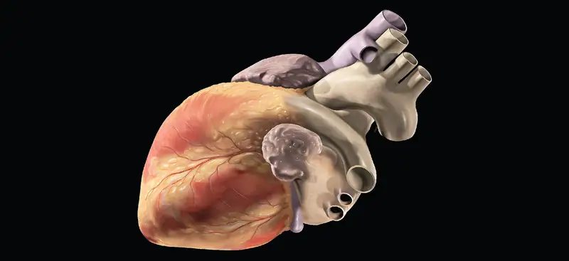
Chapter Outline: Chapter Objectives
After studying this chapter, you will be able to:
- Identify and describe the interior and exterior parts of the human heart
- Describe the path of blood through the cardiac circuits
- Describe the size, shape, and location of the heart
- Compare cardiac muscle to skeletal and smooth muscle
- Explain the cardiac conduction system
- Describe the process and purpose of an electrocardiogram
- Explain the cardiac cycle
- Calculate cardiac output
- Describe the effects of exercise on cardiac output and heart rate
- Name the centers of the brain that control heart rate and describe their function
- Identify other factors affecting heart rate
- Describe fetal heart development
In this chapter, you will explore the remarkable pump that propels the blood into the vessels. There is no single better word to describe the function of the heart other than “pump,” since its contraction develops the pressure that ejects blood into the major vessels: the aorta and pulmonary trunk. From these vessels, the blood is distributed to the remainder of the body. Although the connotation of the term “pump” suggests a mechanical device made of steel and plastic, the anatomical structure is a living, sophisticated muscle. As you read this chapter, try to keep these twin concepts in mind: pump and muscle.
Although the term “heart” is an English word, cardiac (heart-related) terminology can be traced back to the Greek term, “kardia.” Cardiology is the study of the heart, and cardiologists are the physicians who deal primarily with the heart.
19.1 Heart Anatomy¶
Learning Objectives
By the end of this section, you will be able to:
- Describe the location and position of the heart within the body cavity
- Describe the internal and external anatomy of the heart
- Identify the tissue layers of the heart
- Relate the structure of the heart to its function as a pump
- Compare systemic circulation to pulmonary circulation
- Identify the veins and arteries of the coronary circulation system
- Trace the pathway of oxygenated and deoxygenated blood thorough the chambers of the heart
The vital importance of the heart is obvious. If one assumes an average rate of contraction of 75 contractions per minute, a human heart would contract approximately 108,000 times in one day, more than 39 million times in one year, and nearly 3 billion times during a 75-year lifespan. Each of the major pumping chambers of the heart ejects approximately 70 mL blood per contraction in a resting adult. This would be equal to 5.25 liters of fluid per minute and approximately 14,000 liters per day. Over one year, that would equal 10,000,000 liters or 2.6 million gallons of blood sent through roughly 60,000 miles of vessels. In order to understand how that happens, it is necessary to understand the anatomy and physiology of the heart.
Location of the Heart¶
The human heart is located within the thoracic cavity, medially between the lungs in the space known as the mediastinum. Figure 19.2 shows the position of the heart within the thoracic cavity. Within the mediastinum, the heart is separated from the other mediastinal structures by a tough membrane known as the pericardium, or pericardial sac, and sits in its own space called the pericardial cavity. The dorsal surface of the heart lies near the bodies of the vertebrae, and its anterior surface sits deep to the sternum and costal cartilages. The great veins, the superior and inferior venae cavae, and the great arteries, the aorta and pulmonary trunk, are attached to the superior surface of the heart, called the base. The base of the heart is located at the level of the third costal cartilage, as seen in Figure 19.2. The inferior tip of the heart, the apex, lies just to the left of the sternum between the junction of the fourth and fifth ribs near their articulation with the costal cartilages. The right side of the heart is deflected anteriorly, and the left side is deflected posteriorly. It is important to remember the position and orientation of the heart when placing a stethoscope on the chest of a patient and listening for heart sounds, and also when looking at images taken from a midsagittal perspective. The slight deviation of the apex to the left is reflected in a depression in the medial surface of the superior lobe of the left lung, called the cardiac notch.
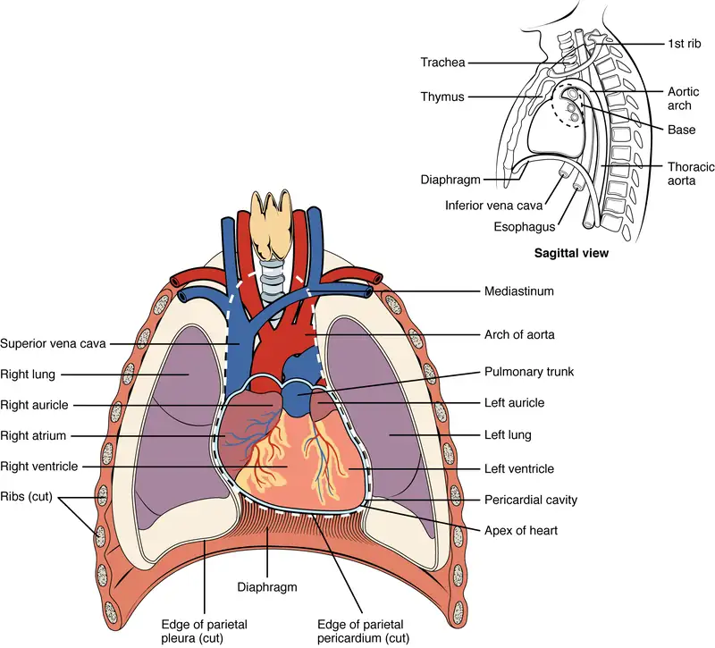
Everyday Connection: CPR
The position of the heart in the torso between the vertebrae and sternum (see Figure 19.2 for the position of the heart within the thorax) allows for individuals to apply an emergency technique known as cardiopulmonary resuscitation (CPR) if the heart of a patient should stop. By applying pressure with the flat portion of one hand on the sternum in the area between the line at T4 and T9 (Figure 19.3), it is possible to manually compress the blood within the heart enough to push some of the blood within it into the pulmonary and systemic circuits. This is particularly critical for the brain, as irreversible damage and death of neurons occur within minutes of loss of blood flow. Current standards call for compression of the chest at least 5 cm deep and at a rate of 100 compressions per minute, a rate equal to the beat in “Staying Alive,” recorded in 1977 by the Bee Gees. If you are unfamiliar with this song, a version is available on www.youtube.com. At this stage, the emphasis is on performing high-quality chest compressions, rather than providing artificial respiration. CPR is generally performed until the patient regains spontaneous contraction or is declared dead by an experienced healthcare professional.
When performed by untrained or overzealous individuals, CPR can result in broken ribs or a broken sternum, and can inflict additional severe damage on the patient. It is also possible, if the hands are placed too low on the sternum, to manually drive the xiphoid process into the liver, a consequence that may prove fatal for the patient. Proper training is essential. This proven life-sustaining technique is so valuable that virtually all medical personnel as well as concerned members of the public should be certified and routinely recertified in its application. CPR courses are offered at a variety of locations, including colleges, hospitals, the American Red Cross, and some commercial companies. They normally include practice of the compression technique on a mannequin.
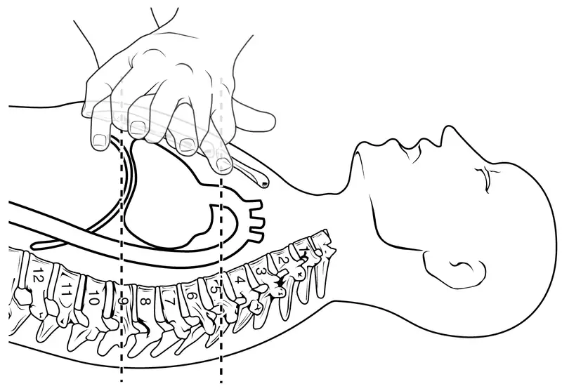
Interactive
Visit the American Heart Association website to help locate a course near your home in the United States. There are also many other national and regional heart associations that offer the same service, depending upon the location.
Shape and Size of the Heart¶
The shape of the heart is similar to a pinecone, rather broad at the superior surface and tapering to the apex (see Figure 19.2). A typical heart is approximately the size of your fist: 12 cm (5 in) in length, 8 cm (3.5 in) wide, and 6 cm (2.5 in) in thickness. Given the size difference between most members of the sexes, the weight of a female heart is approximately 250–300 grams (9 to 11 ounces), and the weight of a male heart is approximately 300–350 grams (11 to 12 ounces). The heart of a well-trained athlete, especially one specializing in aerobic sports, can be considerably larger than this. Cardiac muscle responds to exercise in a manner similar to that of skeletal muscle. That is, exercise results in the addition of protein myofilaments that increase the size of the individual cells without increasing their numbers, a concept called hypertrophy. Hearts of athletes can pump blood more effectively at lower rates than those of nonathletes. Enlarged hearts are not always a result of exercise; they can result from pathologies, such as hypertrophic cardiomyopathy. The cause of an abnormally enlarged heart muscle is unknown, but the condition is often undiagnosed and can cause sudden death in apparently otherwise healthy young people.
Chambers and Circulation through the Heart¶
The human heart consists of four chambers: The left side and the right side each have one atrium and one ventricle. Each of the upper chambers, the right atrium (plural = atria) and the left atrium, acts as a receiving chamber and contracts to push blood into the lower chambers, the right ventricle and the left ventricle. The ventricles serve as the primary pumping chambers of the heart, propelling blood to the lungs or to the rest of the body.
There are two distinct but linked circuits in the human circulation called the pulmonary and systemic circuits. Although both circuits transport blood and everything it carries, we can initially view the circuits from the point of view of gases. The pulmonary circuit transports blood to and from the lungs, where it picks up oxygen and delivers carbon dioxide for exhalation. The systemic circuit transports oxygenated blood to virtually all of the tissues of the body and returns relatively deoxygenated blood and carbon dioxide to the heart to be sent back to the pulmonary circulation.
The right ventricle pumps deoxygenated blood into the pulmonary trunk, which leads toward the lungs and bifurcates into the left and right pulmonary arteries. These vessels in turn branch many times before reaching the pulmonary capillaries, where gas exchange occurs: Carbon dioxide exits the blood and oxygen enters. The pulmonary trunk arteries and their branches are the only arteries in the post-natal body that carry relatively deoxygenated blood. Highly oxygenated blood returning from the pulmonary capillaries in the lungs passes through a series of vessels that join together to form the pulmonary veins—the only post-natal veins in the body that carry highly oxygenated blood. The pulmonary veins conduct blood into the left atrium, which pumps the blood into the left ventricle, which in turn pumps oxygenated blood into the aorta and on to the many branches of the systemic circuit. Eventually, these vessels will lead to the systemic capillaries, where exchange with the tissue fluid and cells of the body occurs. In this case, oxygen and nutrients exit the systemic capillaries to be used by the cells in their metabolic processes, and carbon dioxide and waste products will enter the blood.
The blood exiting the systemic capillaries is lower in oxygen concentration than when it entered. The capillaries will ultimately unite to form venules, joining to form ever-larger veins, eventually flowing into the two major systemic veins, the superior vena cava and the inferior vena cava, which return blood to the right atrium. The blood in the superior and inferior venae cavae flows into the right atrium, which pumps blood into the right ventricle. This process of blood circulation continues as long as the individual remains alive. Understanding the flow of blood through the pulmonary and systemic circuits is critical to all health professions (Figure 19.4).
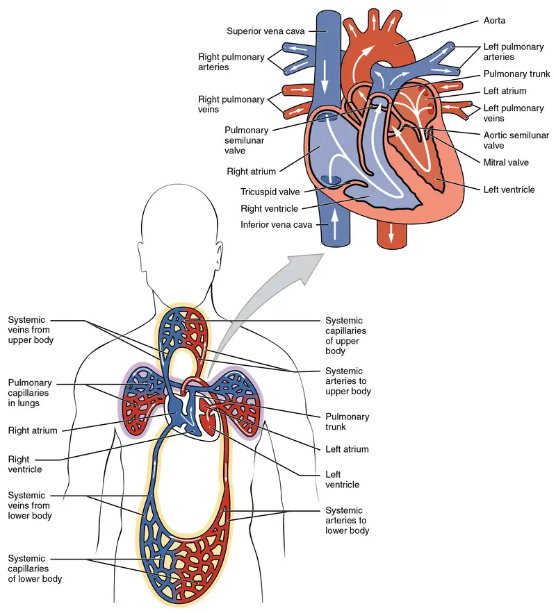
Membranes, Surface Features, and Layers¶
Our exploration of more in-depth heart structures begins by examining the membrane that surrounds the heart, the prominent surface features of the heart, and the layers that form the wall of the heart. Each of these components plays its own unique role in terms of function.
Membranes¶
The membrane that directly surrounds the heart and defines the pericardial cavity is called the pericardium or pericardial sac. It also surrounds the “roots” of the major vessels, or the areas of closest proximity to the heart. The pericardium, which literally translates as “around the heart,” consists of two distinct sublayers: the sturdy outer fibrous pericardium and the inner serous pericardium. The fibrous pericardium is made of tough, dense connective tissue that protects the heart and maintains its position in the thorax. The more delicate serous pericardium consists of two layers: the parietal pericardium, which is fused to the fibrous pericardium, and an inner visceral pericardium, or epicardium, which is fused to the heart and is part of the heart wall. The pericardial cavity, filled with lubricating serous fluid, lies between the epicardium and the pericardium.
In most organs within the body, visceral serous membranes such as the epicardium are microscopic. However, in the case of the heart, it is not a microscopic layer but rather a macroscopic layer, consisting of a simple squamous epithelium called a mesothelium, reinforced with loose, irregular, or areolar connective tissue that attaches to the pericardium. This mesothelium secretes the lubricating serous fluid that fills the pericardial cavity and reduces friction as the heart contracts. Figure 19.5 illustrates the pericardial membrane and the layers of the heart.
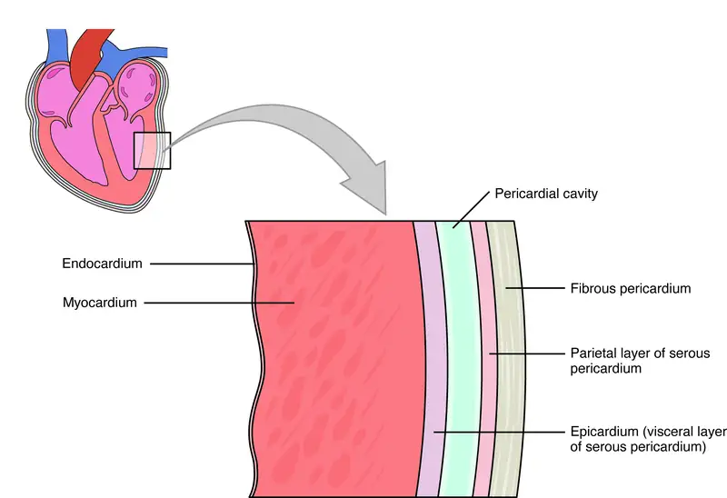
Disorders of the Heart: Cardiac Tamponade
If excess fluid builds within the pericardial space, it can lead to a condition called cardiac tamponade, or pericardial tamponade. With each contraction of the heart, more fluid—in most instances, blood—accumulates within the pericardial cavity. In order to fill with blood for the next contraction, the heart must relax. However, the excess fluid in the pericardial cavity puts pressure on the heart and prevents full relaxation, so the chambers within the heart contain slightly less blood as they begin each heart cycle. Over time, less and less blood is ejected from the heart. If the fluid builds up slowly, as in hypothyroidism, the pericardial cavity may be able to expand gradually to accommodate this extra volume. Some cases of fluid in excess of one liter within the pericardial cavity have been reported. Rapid accumulation of as little as 100 mL of fluid following trauma may trigger cardiac tamponade. Other common causes include myocardial rupture, pericarditis, cancer, or even cardiac surgery. Removal of this excess fluid requires insertion of drainage tubes into the pericardial cavity. Premature removal of these drainage tubes, for example, following cardiac surgery, or clot formation within these tubes are causes of this condition. Untreated, cardiac tamponade can lead to death.
Surface Features of the Heart¶
Inside the pericardium, the surface features of the heart are visible, including the four chambers. There is a superficial leaf-like extension of the atria near the superior surface of the heart, one on each side, called an auricle—a name that means “ear like”—because its shape resembles the external ear of a human (Figure 19.6). Auricles are relatively thin-walled structures that can fill with blood and empty into the atria or upper chambers of the heart. You may also hear them referred to as atrial appendages. Also prominent is a series of fat-filled grooves, each of which is known as a sulcus (plural = sulci), along the superior surfaces of the heart. Major coronary blood vessels are located in these sulci. The deep coronary sulcus is located between the atria and ventricles. Located between the left and right ventricles are two additional sulci that are not as deep as the coronary sulcus. The anterior interventricular sulcus is visible on the anterior surface of the heart, whereas the posterior interventricular sulcus is visible on the posterior surface of the heart. Figure 19.6 illustrates anterior and posterior views of the surface of the heart.
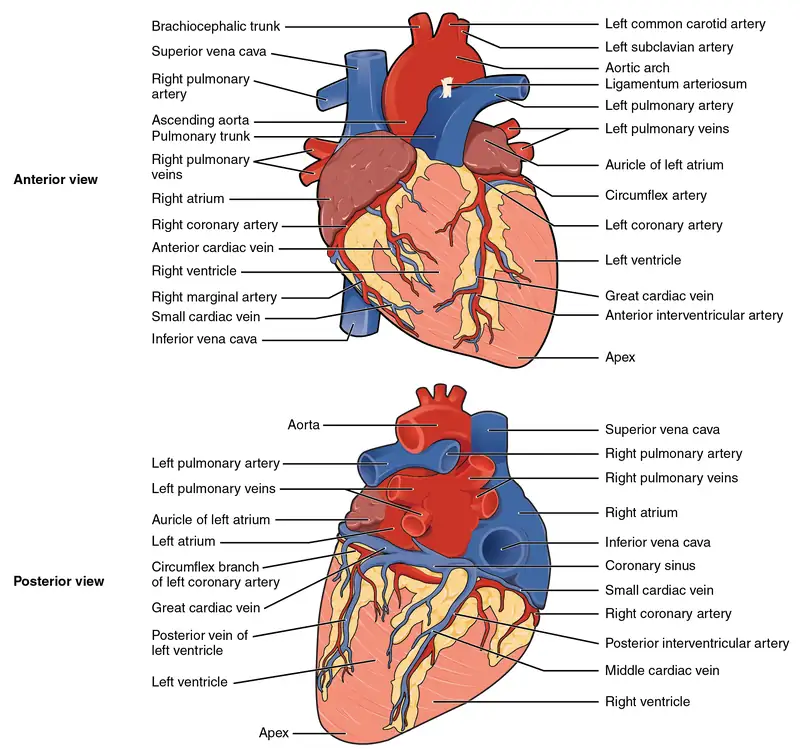
Layers¶
The wall of the heart is composed of three layers of unequal thickness. From superficial to deep, these are the epicardium, the myocardium, and the endocardium (see Figure 19.5). The outermost layer of the wall of the heart is also the innermost layer of the pericardium, the epicardium, or the visceral pericardium discussed earlier.
The middle and thickest layer is the myocardium, made largely of cardiac muscle cells. It is built upon a framework of collagenous fibers, plus the blood vessels that supply the myocardium and the nerve fibers that help regulate the heart. It is the contraction of the myocardium that pumps blood through the heart and into the major arteries. The muscle pattern is elegant and complex, as the muscle cells swirl and spiral around the chambers of the heart. They form a figure 8 pattern around the atria and around the bases of the great vessels. Deeper ventricular muscles also form a figure 8 around the two ventricles and proceed toward the apex. More superficial layers of ventricular muscle wrap around both ventricles. This complex swirling pattern allows the heart to pump blood more effectively than a simple linear pattern would. Figure 19.7 illustrates the arrangement of muscle cells.
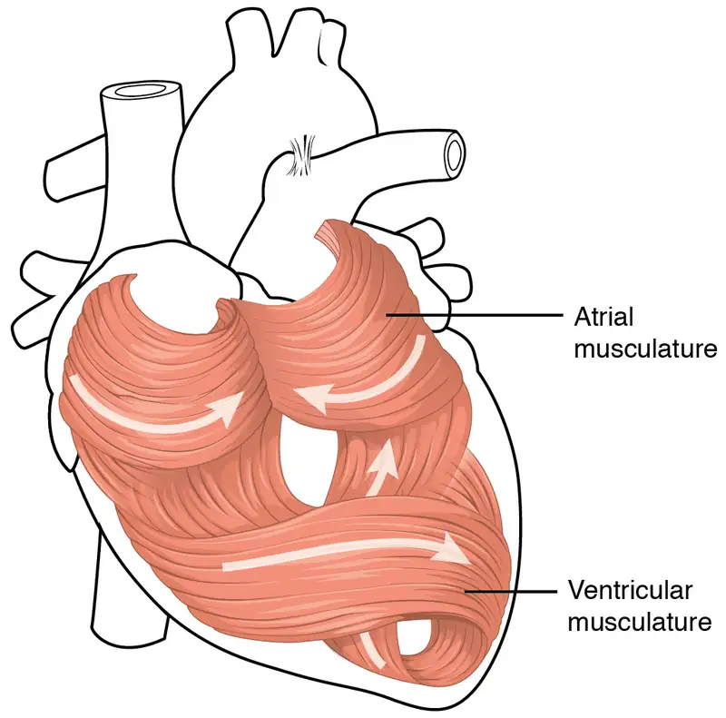
Although the ventricles on the right and left sides pump the same amount of blood per contraction, the muscle of the left ventricle is much thicker and better developed than that of the right ventricle. In order to overcome the high resistance required to pump blood into the long systemic circuit, the left ventricle must generate a great amount of pressure. The right ventricle does not need to generate as much pressure, since the pulmonary circuit is shorter and provides less resistance. Figure 19.8 illustrates the differences in muscular thickness needed for each of the ventricles.
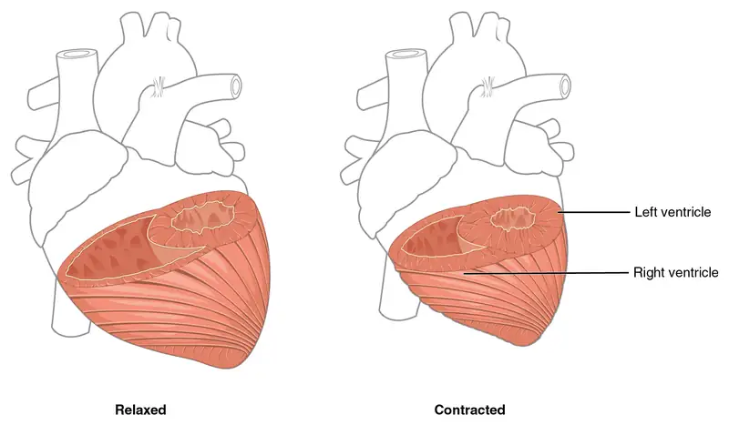
The innermost layer of the heart wall, the endocardium, is joined to the myocardium with a thin layer of connective tissue. The endocardium lines the chambers where the blood circulates and covers the heart valves. It is made of simple squamous epithelium called endothelium, which is continuous with the endothelial lining of the blood vessels (see Figure 19.5).
Once regarded as a simple lining layer, recent evidence indicates that the endothelium of the endocardium and the coronary capillaries may play active roles in regulating the contraction of the muscle within the myocardium. The endothelium may also regulate the growth patterns of the cardiac muscle cells throughout life, and the endothelins it secretes create an environment in the surrounding tissue fluids that regulates ionic concentrations and states of contractility. Endothelins are potent vasoconstrictors and, in a normal individual, establish a homeostatic balance with other vasoconstrictors and vasodilators.
Internal Structure of the Heart¶
Recall that the heart’s contraction cycle follows a dual pattern of circulation—the pulmonary and systemic circuits—because of the pairs of chambers that pump blood into the circulation. In order to develop a more precise understanding of cardiac function, it is first necessary to explore the internal anatomical structures in more detail.
Septa of the Heart¶
The word septum is derived from the Latin for “something that encloses;” in this case, a septum (plural = septa) refers to a wall or partition that divides the heart into chambers. The septa are physical extensions of the myocardium lined with endocardium. Located between the two atria is the interatrial septum. Normally in an adult heart, the interatrial septum bears an oval-shaped depression known as the fossa ovalis, a remnant of an opening in the fetal heart known as the foramen ovale. The foramen ovale allowed blood in the fetal heart to pass directly from the right atrium to the left atrium, allowing some blood to bypass the pulmonary circuit. Within seconds after birth, a flap of tissue known as the septum primum that previously acted as a valve closes the foramen ovale and establishes the typical cardiac circulation pattern.
Between the two ventricles is a second septum known as the interventricular septum. Unlike the interatrial septum, the interventricular septum is normally intact after its formation during fetal development. It is substantially thicker than the interatrial septum, since the ventricles generate far greater pressure when they contract.
The septum between the atria and ventricles is known as the atrioventricular septum. It is marked by the presence of four openings that allow blood to move from the atria into the ventricles and from the ventricles into the pulmonary trunk and aorta. Located in each of these openings between the atria and ventricles is a valve, a specialized structure that ensures one-way flow of blood. The valves between the atria and ventricles are known generically as atrioventricular valves. The valves at the openings that lead to the pulmonary trunk and aorta are known generically as semilunar valves. The interventricular septum is visible in Figure 19.9. In this figure, the atrioventricular septum has been removed to better show the bicuspid and tricuspid valves; the interatrial septum is not visible, since its location is covered by the aorta and pulmonary trunk. Since these openings and valves structurally weaken the atrioventricular septum, the remaining tissue is heavily reinforced with dense connective tissue called the cardiac skeleton, or skeleton of the heart. It includes four rings that surround the openings between the atria and ventricles, and the openings to the pulmonary trunk and aorta, and serve as the point of attachment for the heart valves. The cardiac skeleton also provides an important boundary in the heart electrical conduction system.
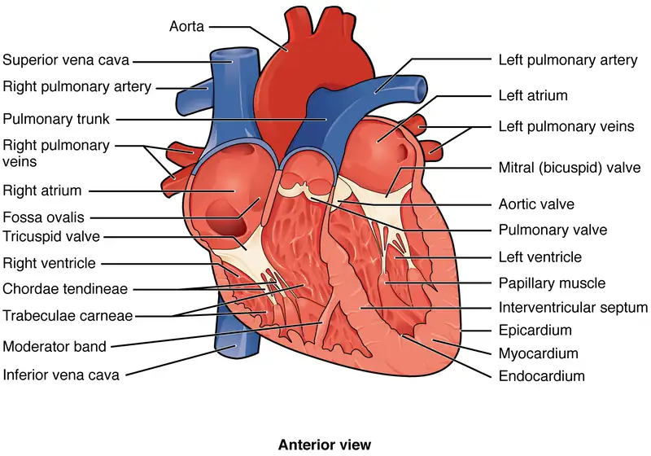
Disorders of the Heart: Heart Defects
One very common form of interatrial septum pathology is patent foramen ovale, which occurs when the septum primum does not close at birth, and the fossa ovalis is unable to fuse. The word patent is from the Latin root patens for “open.” It may be benign or asymptomatic, perhaps never being diagnosed, or in extreme cases, it may require surgical repair to close the opening permanently. As much as 20–25 percent of the general population may have a patent foramen ovale, but fortunately, most have the benign, asymptomatic version. Patent foramen ovale is normally detected by auscultation of a heart murmur (an abnormal heart sound) and confirmed by imaging with an echocardiogram. Despite its prevalence in the general population, the causes of patent ovale are unknown, and there are no known risk factors. In nonlife-threatening cases, it is better to monitor the condition than to risk heart surgery to repair and seal the opening.
Coarctation of the aorta is a congenital abnormal narrowing of the aorta that is normally located at the insertion of the ligamentum arteriosum, the remnant of the fetal shunt called the ductus arteriosus. If severe, this condition drastically restricts blood flow through the primary systemic artery, which is life threatening. In some individuals, the condition may be fairly benign and not detected until later in life. Detectable symptoms in an infant include difficulty breathing, poor appetite, trouble feeding, or failure to thrive. In older individuals, symptoms include dizziness, fainting, shortness of breath, chest pain, fatigue, headache, and nosebleeds. Treatment involves surgery to resect (remove) the affected region or angioplasty to open the abnormally narrow passageway. Studies have shown that the earlier the surgery is performed, the better the chance of survival.
A patent ductus arteriosus is a congenital condition in which the ductus arteriosus fails to close. The condition may range from severe to benign. Failure of the ductus arteriosus to close results in blood flowing from the higher pressure aorta into the lower pressure pulmonary trunk. This additional fluid moving toward the lungs increases pulmonary pressure and makes respiration difficult. Symptoms include shortness of breath (dyspnea), tachycardia, enlarged heart, a widened pulse pressure, and poor weight gain in infants. Treatments include surgical closure (ligation), manual closure using platinum coils or specialized mesh inserted via the femoral artery or vein, or nonsteroidal anti-inflammatory drugs to block the synthesis of prostaglandin E2, which maintains the vessel in an open position. If untreated, the condition can result in congestive heart failure.
Septal defects are not uncommon in individuals and may be congenital or caused by various disease processes. Tetralogy of Fallot is a congenital condition that may also occur from exposure to unknown environmental factors; it occurs when there is an opening in the interventricular septum caused by blockage of the pulmonary trunk, normally at the pulmonary semilunar valve. This allows blood that is relatively low in oxygen from the right ventricle to flow into the left ventricle and mix with the blood that is relatively high in oxygen. Symptoms include a distinct heart murmur, low blood oxygen percent saturation, dyspnea or difficulty in breathing, polycythemia, broadening (clubbing) of the fingers and toes, and in children, difficulty in feeding or failure to grow and develop. It is the most common cause of cyanosis following birth. The term “tetralogy” is derived from the four components of the condition, although only three may be present in an individual patient: pulmonary infundibular stenosis (rigidity of the pulmonary valve), overriding aorta (the aorta is shifted above both ventricles), ventricular septal defect (opening), and right ventricular hypertrophy (enlargement of the right ventricle). Other heart defects may also accompany this condition, which is typically confirmed by echocardiography imaging. Tetralogy of Fallot occurs in approximately 400 out of one million live births. Normal treatment involves extensive surgical repair, including the use of stents to redirect blood flow and replacement of valves and patches to repair the septal defect, but the condition has a relatively high mortality. Survival rates are currently 75 percent during the first year of life; 60 percent by 4 years of age; 30 percent by 10 years; and 5 percent by 40 years.
In the case of severe septal defects, including both tetralogy of Fallot and patent foramen ovale, failure of the heart to develop properly can lead to a condition commonly known as a “blue baby.” Regardless of normal skin pigmentation, individuals with this condition have an insufficient supply of oxygenated blood, which leads to cyanosis, a blue or purple coloration of the skin, especially when active.
Septal defects are commonly first detected through auscultation, listening to the chest using a stethoscope. In this case, instead of hearing normal heart sounds attributed to the flow of blood and closing of heart valves, unusual heart sounds may be detected. This is often followed by medical imaging to confirm or rule out a diagnosis. In many cases, treatment may not be needed. Some common congenital heart defects are illustrated in Figure 19.10.
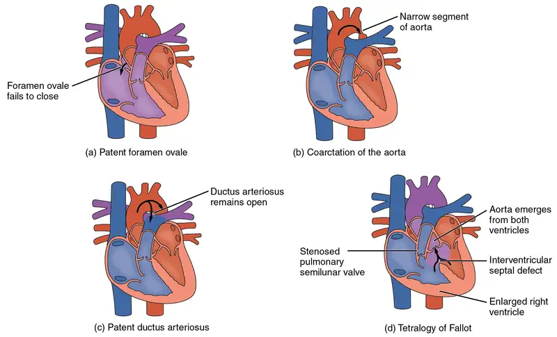
Right Atrium¶
The right atrium serves as the receiving chamber for blood returning to the heart from the systemic circulation. The two major systemic veins, the superior and inferior venae cavae, and the large coronary vein called the coronary sinus that drains the heart myocardium empty into the right atrium. The superior vena cava drains blood from regions superior to the diaphragm: the head, neck, upper limbs, and the thoracic region. It empties into the superior and posterior portions of the right atrium. The inferior vena cava drains blood from areas inferior to the diaphragm: the lower limbs and abdominopelvic region of the body. It, too, empties into the posterior portion of the atria, but inferior to the opening of the superior vena cava. Immediately superior and slightly medial to the opening of the inferior vena cava on the posterior surface of the atrium is the opening of the coronary sinus. This thin-walled vessel drains most of the coronary veins that return systemic blood from the heart. The majority of the internal heart structures discussed in this and subsequent sections are illustrated in Figure 19.9.
While the bulk of the internal surface of the right atrium is smooth, the depression of the fossa ovalis is medial, and the anterior surface demonstrates prominent ridges of muscle called the pectinate muscles. The right auricle also has pectinate muscles. The left atrium does not have pectinate muscles except in the auricle.
The atria receive venous blood on a nearly continuous basis, preventing venous flow from stopping while the ventricles are contracting. While most ventricular filling occurs while the atria are relaxed, they do demonstrate a contractile phase and actively pump blood into the ventricles just prior to ventricular contraction. The opening between the atrium and ventricle is guarded by the tricuspid valve.
Right Ventricle¶
The right ventricle receives blood from the right atrium through the tricuspid valve. Each flap of the valve is attached to strong strands of connective tissue, the chordae tendineae, literally “tendinous cords,” or sometimes more poetically referred to as “heart strings.” There are several chordae tendineae associated with each of the flaps. They are composed of approximately 80 percent collagenous fibers with the remainder consisting of elastic fibers and endothelium. They connect each of the flaps to a papillary muscle that extends from the inferior ventricular surface. There are three papillary muscles in the right ventricle, called the anterior, posterior, and septal muscles, which correspond to the three sections of the valves.
When the myocardium of the ventricle contracts, pressure within the ventricular chamber rises. Blood, like any fluid, flows from higher pressure to lower pressure areas, in this case, toward the pulmonary trunk and the atrium. To prevent any potential backflow, the papillary muscles also contract, generating tension on the chordae tendineae. This prevents the flaps of the valves from being forced into the atria and regurgitation of the blood back into the atria during ventricular contraction. Figure 19.11 shows papillary muscles and chordae tendineae attached to the tricuspid valve.
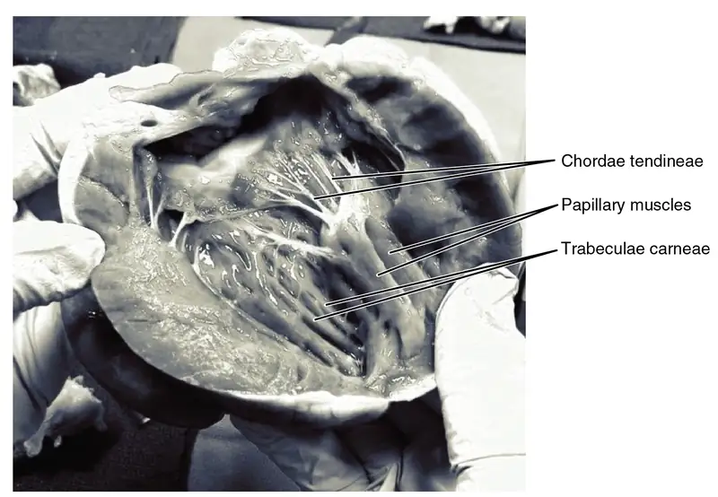
The walls of the ventricle are lined with trabeculae carneae, ridges of cardiac muscle covered by endocardium. In addition to these muscular ridges, a band of cardiac muscle, also covered by endocardium, known as the moderator band (see Figure 19.9) reinforces the thin walls of the right ventricle and plays a crucial role in cardiac conduction. It arises from the inferior portion of the interventricular septum and crosses the interior space of the right ventricle to connect with the inferior papillary muscle.
When the right ventricle contracts, it ejects blood into the pulmonary trunk, which branches into the left and right pulmonary arteries that carry it to each lung. The superior surface of the right ventricle begins to taper as it approaches the pulmonary trunk. At the base of the pulmonary trunk is the pulmonary semilunar valve that prevents backflow from the pulmonary trunk.
Left Atrium¶
After exchange of gases in the pulmonary capillaries, blood returns to the left atrium high in oxygen via one of the four pulmonary veins. While the left atrium does not contain pectinate muscles, it does have an auricle that includes these pectinate ridges. Blood flows nearly continuously from the pulmonary veins back into the atrium, which acts as the receiving chamber, and from here through an opening into the left ventricle. Most blood flows passively into the heart while both the atria and ventricles are relaxed, but toward the end of the ventricular relaxation period, the left atrium will contract, pumping blood into the ventricle. This atrial contraction accounts for approximately 20 percent of ventricular filling. The opening between the left atrium and ventricle is guarded by the mitral valve.
Left Ventricle¶
Recall that, although both sides of the heart will pump the same amount of blood, the muscular layer is much thicker in the left ventricle compared to the right (see Figure 19.8). Like the right ventricle, the left also has trabeculae carneae, but there is no moderator band. The mitral valve is connected to papillary muscles via chordae tendineae. There are two papillary muscles on the left—the anterior and posterior—as opposed to three on the right.
The left ventricle is the major pumping chamber for the systemic circuit; it ejects blood into the aorta through the aortic semilunar valve.
Heart Valve Structure and Function¶
A transverse section through the heart slightly above the level of the atrioventricular septum reveals all four heart valves along the same plane (Figure 19.12). The valves ensure unidirectional blood flow through the heart. Between the right atrium and the right ventricle is the right atrioventricular valve, or tricuspid valve. It typically consists of three flaps, or leaflets, made of endocardium reinforced with additional connective tissue. The flaps are connected by chordae tendineae to the papillary muscles, which control the opening and closing of the valves.
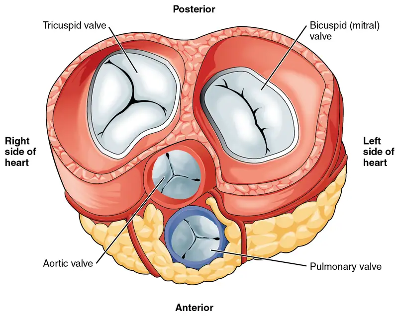
Emerging from the right ventricle at the base of the pulmonary trunk is the pulmonary semilunar valve, or the pulmonary valve; it is also known as the pulmonic valve or the right semilunar valve. The pulmonary valve is comprised of three small flaps of endothelium reinforced with connective tissue. When the ventricle relaxes, the pressure differential causes blood to flow back into the ventricle from the pulmonary trunk. This flow of blood fills the pocket-like flaps of the pulmonary valve, causing the valve to close and producing an audible sound. Unlike the atrioventricular valves, there are no papillary muscles or chordae tendineae associated with the pulmonary valve.
Located at the opening between the left atrium and left ventricle is the mitral valve, also called the bicuspid valve or the left atrioventricular valve. Structurally, this valve consists of two cusps, compared to the three cusps of the tricuspid valve. In a clinical setting, the valve is referred to as the mitral valve, rather than the bicuspid valve. The two cusps of the mitral valve are attached by chordae tendineae to two papillary muscles that project from the wall of the ventricle.
At the base of the aorta is the aortic semilunar valve, or the aortic valve, which prevents backflow from the aorta. It normally is composed of three flaps. When the ventricle relaxes and blood attempts to flow back into the ventricle from the aorta, blood will fill the cusps of the valve, causing it to close and producing an audible sound.
In Figure 19.13a, the two atrioventricular valves are open and the two semilunar valves are closed. This occurs when both atria and ventricles are relaxed and when the atria contract to pump blood into the ventricles. Figure 19.13b shows a frontal view. Although only the left side of the heart is illustrated, the process is virtually identical on the right.
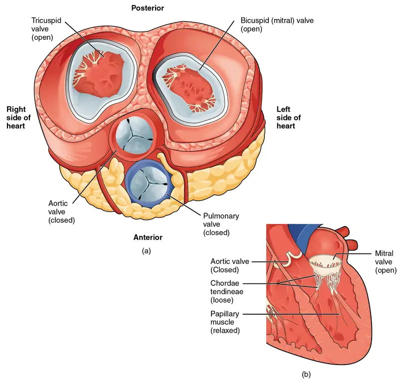
Figure 19.14a shows the atrioventricular valves closed while the two semilunar valves are open. This occurs when the ventricles contract to eject blood into the pulmonary trunk and aorta. Closure of the two atrioventricular valves prevents blood from being forced back into the atria. This stage can be seen from a frontal view in Figure 19.14b.
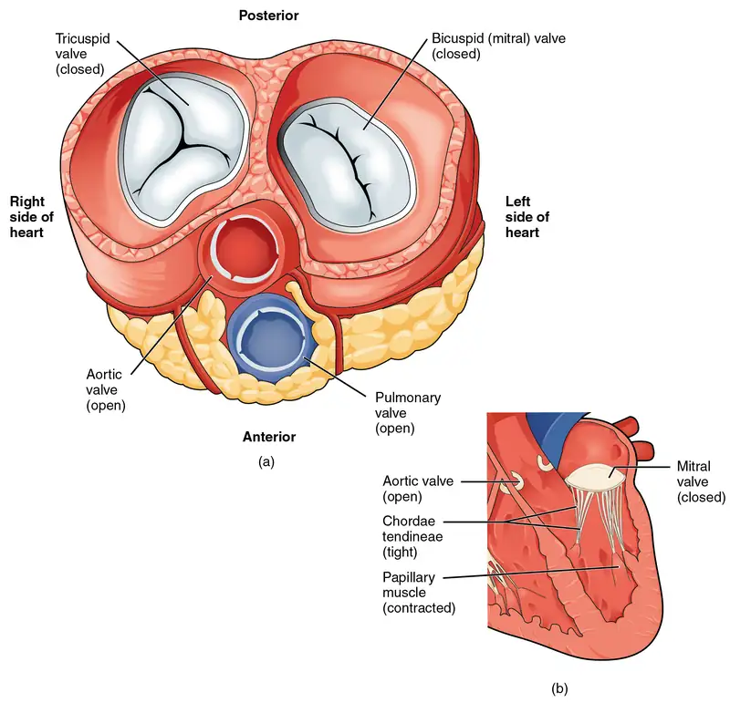
When the ventricles begin to contract, pressure within the ventricles rises and blood flows toward the area of lowest pressure, which is initially in the atria. This backflow causes the cusps of the tricuspid and mitral (bicuspid) valves to close. These valves are tied down to the papillary muscles by chordae tendineae. During the relaxation phase of the cardiac cycle, the papillary muscles are also relaxed and the tension on the chordae tendineae is slight (see Figure 19.13b). However, as the myocardium of the ventricle contracts, so do the papillary muscles. This creates tension on the chordae tendineae (see Figure 19.14b), helping to hold the cusps of the atrioventricular valves in place and preventing them from being blown back into the atria.
The aortic and pulmonary semilunar valves lack the chordae tendineae and papillary muscles associated with the atrioventricular valves. Instead, they consist of pocket-like folds of endocardium reinforced with additional connective tissue. When the ventricles relax and the change in pressure forces the blood toward the ventricles, the blood presses against these cusps and seals the openings.
Interactive
Visit this site to observe an echocardiogram of actual heart valves opening and closing. Although much of the heart has been “removed” from this gif loop so the chordae tendineae are not visible, why is their presence more critical for the atrioventricular valves (tricuspid and mitral) than the semilunar (aortic and pulmonary) valves?
Disorders of the Heart Valves
When heart valves do not function properly, they are often described as incompetent and result in valvular heart disease, which can range from benign to lethal. Some of these conditions are congenital, that is, the individual was born with the defect, whereas others may be attributed to disease processes or trauma. Some malfunctions are treated with medications, others require surgery, and still others may be mild enough that the condition is merely monitored since treatment might trigger more serious consequences.
Valvular disorders are often caused by carditis, or inflammation of the heart. One common trigger for this inflammation is rheumatic fever, or scarlet fever, an autoimmune response to the presence of a bacterium, Streptococcus pyogenes, normally a disease of childhood.
While any of the heart valves may be involved in valve disorders, mitral regurgitation is the most common, detected in approximately 2 percent of the population, and the pulmonary semilunar valve is the least frequently involved. When a valve malfunctions, the flow of blood to a region will often be disrupted. The resulting inadequate flow of blood to this region will be described in general terms as an insufficiency. The specific type of insufficiency is named for the valve involved: aortic insufficiency, mitral insufficiency, tricuspid insufficiency, or pulmonary insufficiency.
If one of the cusps of the valve is forced backward by the force of the blood, the condition is referred to as a prolapsed valve. Prolapse may occur if the chordae tendineae are damaged or broken, causing the closure mechanism to fail. The failure of the valve to close properly disrupts the normal one-way flow of blood and results in regurgitation, when the blood flows backward from its normal path. Using a stethoscope, the disruption to the normal flow of blood produces a heart murmur.
Stenosis is a condition in which the heart valves become rigid and may calcify over time. The loss of flexibility of the valve interferes with normal function and may cause the heart to work harder to propel blood through the valve, which eventually weakens the heart. Aortic stenosis affects approximately 2 percent of the population over 65 years of age, and the percentage increases to approximately 4 percent in individuals over 85 years. Occasionally, one or more of the chordae tendineae will tear or the papillary muscle itself may die as a component of a myocardial infarction (heart attack). In this case, the patient’s condition will deteriorate dramatically and rapidly, and immediate surgical intervention may be required.
Auscultation, or listening to a patient’s heart sounds, is one of the most useful diagnostic tools, since it is proven, safe, and inexpensive. The term auscultation is derived from the Latin for “to listen,” and the technique has been used for diagnostic purposes as far back as the ancient Egyptians. Valve and septal disorders will trigger abnormal heart sounds. If a valvular disorder is detected or suspected, a test called an echocardiogram, or simply an “echo,” may be ordered. Echocardiograms are sonograms of the heart and can help in the diagnosis of valve disorders as well as a wide variety of heart pathologies.
Interactive
Visit this site for audio examples of heart sounds.
Career Connection: Cardiologist
Cardiologists are medical doctors that specialize in the diagnosis and treatment of diseases of the heart. After completing 4 years of medical school, cardiologists complete a three-year residency in internal medicine followed by an additional three or more years in cardiology. Following this 10-year period of medical training and clinical experience, they qualify for a rigorous two-day examination administered by the Board of Internal Medicine that tests their academic training and clinical abilities, including diagnostics and treatment. After successful completion of this examination, a physician becomes a board-certified cardiologist. Some board-certified cardiologists may be invited to become a Fellow of the American College of Cardiology (FACC). This professional recognition is awarded to outstanding physicians based upon merit, including outstanding credentials, achievements, and community contributions to cardiovascular medicine.
Interactive
Visit this site to learn more about cardiologists.
Career Connection: Cardiovascular Technologist/Technician
Cardiovascular technologists/technicians are trained professionals who perform a variety of imaging techniques, such as sonograms or echocardiograms, used by physicians to diagnose and treat diseases of the heart. Nearly all of these positions require an associate degree. Growth within the field is fast, projected at 29 percent from 2010 to 2020.
There is a considerable overlap and complementary skills between cardiac technicians and vascular technicians, and so the term cardiovascular technician is often used. Special certifications within the field require documenting appropriate experience and completing additional and often expensive certification examinations. These subspecialties include Certified Rhythm Analysis Technician (CRAT), Certified Cardiographic Technician (CCT), Registered Congenital Cardiac Sonographer (RCCS), Registered Cardiac Electrophysiology Specialist (RCES), Registered Cardiovascular Invasive Specialist (RCIS), Registered Cardiac Sonographer (RCS), Registered Vascular Specialist (RVS), and Registered Phlebology Sonographer (RPhS).
Interactive
Visit this site for more information on cardiovascular technologists/technicians.
Coronary Circulation¶
You will recall that the heart is a remarkable pump composed largely of cardiac muscle cells that are incredibly active throughout life. Like all other cells, a cardiomyocyte requires a reliable supply of oxygen and nutrients, and a way to remove wastes, so it needs a dedicated, complex, and extensive coronary circulation. And because of the critical and nearly ceaseless activity of the heart throughout life, this need for a blood supply is even greater than for a typical cell. However, coronary circulation is not continuous; rather, it cycles, reaching a peak when the heart muscle is relaxed and nearly ceasing while it is contracting.
Coronary Arteries¶
Coronary arteries supply blood to the myocardium and other components of the heart. The first portion of the aorta after it arises from the left ventricle gives rise to the coronary arteries. There are three dilations in the wall of the aorta just superior to the aortic semilunar valve. Two of these, the left posterior aortic sinus and anterior aortic sinus, give rise to the left and right coronary arteries, respectively. The third sinus, the right posterior aortic sinus, typically does not give rise to a vessel. Coronary vessel branches that remain on the surface of the artery and follow the sulci are called epicardial coronary arteries.
The left coronary artery distributes blood to the left side of the heart, the left atrium and ventricle, and the interventricular septum. The circumflex artery arises from the left coronary artery and follows the coronary sulcus to the left. Eventually, it will fuse with the small branches of the right coronary artery. The larger anterior interventricular artery, also known as the left anterior descending artery (LAD), is the second major branch arising from the left coronary artery. It follows the anterior interventricular sulcus around the pulmonary trunk. Along the way it gives rise to numerous smaller branches that interconnect with the branches of the posterior interventricular artery, forming anastomoses. An anastomosis is an area where vessels unite to form interconnections that normally allow blood to circulate to a region even if there may be partial blockage in another branch. The anastomoses in the heart are very small. Therefore, this ability is somewhat restricted in the heart so a coronary artery blockage often results in death of the cells (myocardial infarction) supplied by the particular vessel.
The right coronary artery proceeds along the coronary sulcus and distributes blood to the right atrium, portions of both ventricles, and the heart conduction system. Normally, one or more marginal arteries arise from the right coronary artery inferior to the right atrium. The marginal arteries supply blood to the superficial portions of the right ventricle. On the posterior surface of the heart, the right coronary artery gives rise to the posterior interventricular artery, also known as the posterior descending artery. It runs along the posterior portion of the interventricular sulcus toward the apex of the heart, giving rise to branches that supply the interventricular septum and portions of both ventricles. Figure 19.15 presents views of the coronary circulation from both the anterior and posterior views.
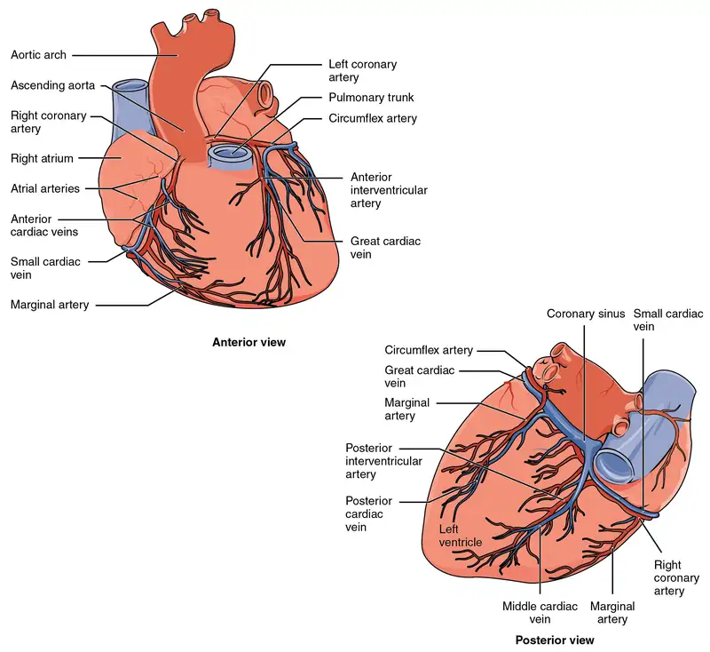
Diseases of the Heart: Myocardial Infarction
Myocardial infarction (MI) is the formal term for what is commonly referred to as a heart attack. It normally results from a lack of blood flow (ischemia) and oxygen (hypoxia) to a region of the heart, resulting in death of the cardiac muscle cells. An MI often occurs when a coronary artery is blocked by the buildup of atherosclerotic plaque consisting of lipids, cholesterol and fatty acids, and white blood cells, primarily macrophages. It can also occur when a portion of an unstable atherosclerotic plaque travels through the coronary arterial system and lodges in one of the smaller vessels. The resulting blockage restricts the flow of blood and oxygen to the myocardium and causes death of the tissue. MIs may be triggered by excessive exercise, in which the partially occluded artery is no longer able to pump sufficient quantities of blood, or severe stress, which may induce spasm of the smooth muscle in the walls of the vessel.
In the case of acute MI, there is often sudden pain beneath the sternum (retrosternal pain) called angina pectoris, often radiating down the left arm in males but not in female patients. Until this anomaly between the sexes was discovered, many female patients suffering MIs were misdiagnosed and sent home. In addition, patients typically present with difficulty breathing and shortness of breath (dyspnea), irregular heartbeat (palpations), nausea and vomiting, sweating (diaphoresis), anxiety, and fainting (syncope), although not all of these symptoms may be present. Many of the symptoms are shared with other medical conditions, including anxiety attacks and simple indigestion, so differential diagnosis is critical. It is estimated that between 22 and 64 percent of MIs present without any symptoms.
An MI can be confirmed by examining the patient’s ECG, which frequently reveals alterations in the ST and Q components. Some classification schemes of MI are referred to as ST-elevated MI (STEMI) and non-elevated MI (non-STEMI). In addition, echocardiography or cardiac magnetic resonance imaging may be employed. Common blood tests indicating an MI include elevated levels of creatine kinase MB (an enzyme that catalyzes the conversion of creatine to phosphocreatine, consuming ATP) and cardiac troponin (the regulatory protein for muscle contraction), both of which are released by damaged cardiac muscle cells.
Immediate treatments for MI are essential and include administering supplemental oxygen, aspirin that helps to break up clots, and nitroglycerine administered sublingually (under the tongue) to facilitate its absorption. Despite its unquestioned success in treatments and use since the 1880s, the mechanism of nitroglycerine is still incompletely understood but is believed to involve the release of nitric oxide, a known vasodilator, and endothelium-derived releasing factor, which also relaxes the smooth muscle in the tunica media of coronary vessels. Longer-term treatments include injections of thrombolytic agents such as streptokinase that dissolve the clot, the anticoagulant heparin, balloon angioplasty and stents to open blocked vessels, and bypass surgery to allow blood to pass around the site of blockage. If the damage is extensive, coronary replacement with a donor heart or coronary assist device, a sophisticated mechanical device that supplements the pumping activity of the heart, may be employed. Despite the attention, development of artificial hearts to augment the severely limited supply of heart donors has proven less than satisfactory but will likely improve in the future.
MIs may trigger cardiac arrest, but the two are not synonymous. Important risk factors for MI include cardiovascular disease, age, smoking, high blood levels of the low-density lipoprotein (LDL, often referred to as “bad” cholesterol), low levels of high-density lipoprotein (HDL, or “good” cholesterol), hypertension, diabetes mellitus, obesity, lack of physical exercise, chronic kidney disease, excessive alcohol consumption, and use of illegal drugs.
Coronary Veins¶
Coronary veins drain the heart and generally parallel the large surface arteries (see Figure 19.15). The great cardiac vein can be seen initially on the surface of the heart following the interventricular sulcus, but it eventually flows along the coronary sulcus into the coronary sinus on the posterior surface. The great cardiac vein initially parallels the anterior interventricular artery and drains the areas supplied by this vessel. It receives several major branches, including the posterior cardiac vein, the middle cardiac vein, and the small cardiac vein. The posterior cardiac vein parallels and drains the areas supplied by the marginal artery branch of the circumflex artery. The middle cardiac vein parallels and drains the areas supplied by the posterior interventricular artery. The small cardiac vein parallels the right coronary artery and drains the blood from the posterior surfaces of the right atrium and ventricle. The coronary sinus is a large, thin-walled vein on the posterior surface of the heart lying within the atrioventricular sulcus and emptying directly into the right atrium. The anterior cardiac veins parallel the small cardiac arteries and drain the anterior surface of the right ventricle. Unlike these other cardiac veins, it bypasses the coronary sinus and drains directly into the right atrium.
Disorders of the Heart: Coronary Artery Disease
Coronary artery disease is the leading cause of death worldwide. It occurs when the buildup of plaque—a fatty material including cholesterol, connective tissue, white blood cells, and some smooth muscle cells—within the walls of the arteries obstructs the flow of blood and decreases the flexibility or compliance of the vessels. This condition is called atherosclerosis, a hardening of the arteries that involves the accumulation of plaque. As the coronary blood vessels become occluded, the flow of blood to the tissues will be restricted, a condition called ischemia that causes the cells to receive insufficient amounts of oxygen, called hypoxia. Figure 19.16 shows the blockage of coronary arteries highlighted by the injection of dye. Some individuals with coronary artery disease report pain radiating from the chest called angina pectoris, but others remain asymptomatic. If untreated, coronary artery disease can lead to MI or a heart attack.
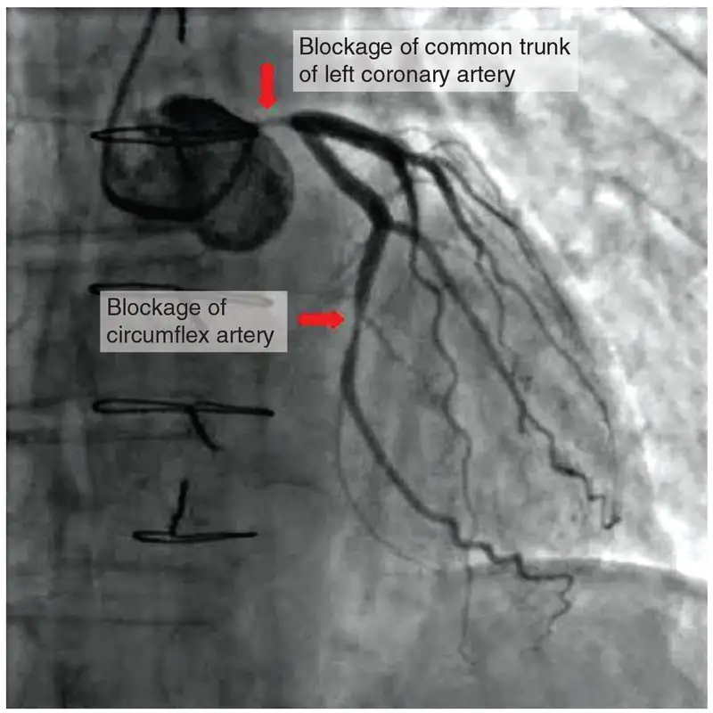
The disease progresses slowly and often begins in children and can be seen as fatty “streaks” in the vessels. It then gradually progresses throughout life. Well-documented risk factors include smoking, family history, hypertension, obesity, diabetes, high alcohol consumption, lack of exercise, stress, and hyperlipidemia or high circulating levels of lipids in the blood. Treatments may include medication, changes to diet and exercise, angioplasty with a balloon catheter, insertion of a stent, or coronary bypass procedure.
Angioplasty is a procedure in which the occlusion is mechanically widened with a balloon. A specialized catheter with an expandable tip is inserted into a superficial vessel, normally in the leg, and then directed to the site of the occlusion. At this point, the balloon is inflated to compress the plaque material and to open the vessel to increase blood flow. Then, the balloon is deflated and retracted. A stent consisting of a specialized mesh is typically inserted at the site of occlusion to reinforce the weakened and damaged walls. Stent insertions have been routine in cardiology for more than 40 years.
Coronary bypass surgery may also be performed. This surgical procedure grafts a replacement vessel obtained from another, less vital portion of the body to bypass the occluded area. This procedure is clearly effective in treating patients experiencing a MI, but overall does not increase longevity. Nor does it seem advisable in patients with stable although diminished cardiac capacity since frequently loss of mental acuity occurs following the procedure. Long-term changes to behavior, emphasizing diet and exercise plus a medicine regime tailored to lower blood pressure, lower cholesterol and lipids, and reduce clotting are equally as effective.
19.2 Cardiac Muscle and Electrical Activity¶
Learning Objectives
By the end of this section, you will be able to:
- Describe the structure of cardiac muscle
- Identify and describe the components of the conducting system that distributes electrical impulses through the heart
- Compare the effect of ion movement on membrane potential of cardiac conductive and contractile cells
- Relate characteristics of an electrocardiogram to events in the cardiac cycle
- Identify blocks that can interrupt the cardiac cycle
Recall that cardiac muscle shares a few characteristics with both skeletal muscle and smooth muscle, but it has some unique properties of its own. Not the least of these exceptional properties is its ability to initiate an electrical potential at a fixed rate that spreads rapidly from cell to cell to trigger the contractile mechanism. This property is known as autorhythmicity. Neither smooth nor skeletal muscle can do this. Even though cardiac muscle has autorhythmicity, heart rate is modulated by the endocrine and nervous systems.
There are two major types of cardiac muscle cells: myocardial contractile cells and myocardial conducting cells. The myocardial contractile cells constitute the bulk (99 percent) of the cells in the atria and ventricles. Contractile cells conduct impulses and are responsible for contractions that pump blood through the body. The myocardial conducting cells (1 percent of the cells) form the conduction system of the heart. Except for Purkinje cells, they are generally much smaller than the contractile cells and have few of the myofibrils or filaments needed for contraction. Their function is similar in many respects to neurons, although they are specialized muscle cells. Myocardial conduction cells initiate and propagate the action potential (the electrical impulse) that travels throughout the heart and triggers the contractions that propel the blood.
Structure of Cardiac Muscle¶
Compared to the giant cylinders of skeletal muscle, cardiac muscle cells, or cardiomyocytes, are considerably shorter with much smaller diameters. Cardiac muscle also demonstrates striations, the alternating pattern of dark A bands and light I bands attributed to the precise arrangement of the myofilaments and fibrils that are organized in sarcomeres along the length of the cell (Figure 19.17a). These contractile elements are virtually identical to skeletal muscle. T (transverse) tubules penetrate from the surface plasma membrane, the sarcolemma, to the interior of the cell, allowing the electrical impulse to reach the interior. The T tubules are only found at the Z discs, whereas in skeletal muscle, they are found at the junction of the A and I bands. Therefore, there are one-half as many T tubules in cardiac muscle as in skeletal muscle. In addition, the sarcoplasmic reticulum stores few calcium ions, so most of the calcium ions must come from outside the cells. The result is a slower onset of contraction. Mitochondria are plentiful, providing energy for the contractions of the heart. Typically, cardiomyocytes have a single, central nucleus, but two or more nuclei may be found in some cells.
Cardiac muscle cells branch freely. A junction between two adjoining cells is marked by a critical structure called an intercalated disc, which helps support the synchronized contraction of the muscle (Figure 19.17b). The sarcolemmas from adjacent cells bind together at the intercalated discs. They consist of desmosomes, specialized linking proteoglycans, and large numbers of gap junctions that allow the passage of ions between the cells and help to synchronize the contraction (Figure 19.17c). Intercellular connective tissue also helps to bind the cells together. The importance of strongly binding these cells together is necessitated by the forces exerted by contraction.
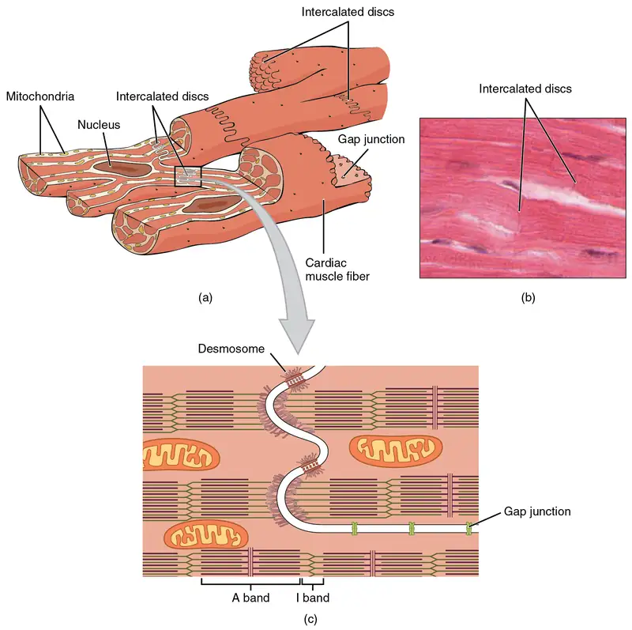
Cardiac muscle undergoes aerobic respiration patterns, primarily metabolizing lipids and carbohydrates. Myoglobin, lipids, and glycogen are all stored within the cytoplasm. Cardiac muscle cells undergo twitch-type contractions with long refractory periods followed by brief relaxation periods. The relaxation is essential so the heart can fill with blood for the next cycle. The refractory period is very long to prevent the possibility of tetany, a condition in which muscle remains involuntarily contracted. In the heart, tetany is not compatible with life, since it would prevent the heart from pumping blood.
Everyday Connection: Repair and Replacement
Damaged cardiac muscle cells have extremely limited abilities to repair themselves or to replace dead cells via mitosis. Recent evidence indicates that at least some stem cells remain within the heart that continue to divide and at least potentially replace these dead cells. However, newly formed or repaired cells are rarely as functional as the original cells, and cardiac function is reduced. In the event of a heart attack or MI, dead cells are often replaced by patches of scar tissue. Autopsies performed on individuals who had successfully received heart transplants show some proliferation of original cells. If researchers can unlock the mechanism that generates new cells and restore full mitotic capabilities to heart muscle, the prognosis for heart attack survivors will be greatly enhanced. To date, myocardial cells produced within the patient (in situ) by cardiac stem cells seem to be nonfunctional, although those grown in Petri dishes (in vitro) do beat. Perhaps soon this mystery will be solved, and new advances in treatment will be commonplace.
Conduction System of the Heart¶
If embryonic heart cells are separated into a Petri dish and kept alive, each is capable of generating its own electrical impulse followed by contraction. When two independently beating embryonic cardiac muscle cells are placed together, the cell with the higher inherent rate sets the pace, and the impulse spreads from the faster to the slower cell to trigger a contraction. As more cells are joined together, the fastest cell continues to assume control of the rate. A fully developed adult heart maintains the capability of generating its own electrical impulse, triggered by the fastest cells, as part of the cardiac conduction system. The components of the cardiac conduction system include the sinoatrial node, the atrioventricular node, the atrioventricular bundle, the atrioventricular bundle branches, and the Purkinje cells (Figure 19.18).
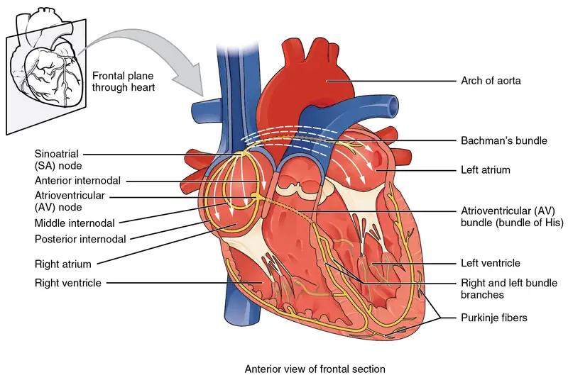
Sinoatrial (SA) Node¶
Normal cardiac rhythm is established by the sinoatrial (SA) node, a specialized clump of myocardial conducting cells located in the superior and posterior walls of the right atrium in close proximity to the orifice of the superior vena cava. The SA node has the highest inherent rate of depolarization and is known as the pacemaker of the heart. It initiates the sinus rhythm, or normal electrical pattern followed by contraction of the heart.
This impulse spreads from its initiation in the SA node throughout the atria through specialized internodal pathways, to the atrial myocardial contractile cells and the atrioventricular node. The internodal pathways consist of three bands (anterior, middle, and posterior) that lead directly from the SA node to the next node in the conduction system, the atrioventricular node (see Figure 19.18). The impulse takes approximately 50 ms (milliseconds) to travel between these two nodes. The relative importance of this pathway has been debated since the impulse would reach the atrioventricular node simply following the cell-by-cell pathway through the contractile cells of the myocardium in the atria. In addition, there is a specialized pathway called Bachmann’s bundle or the interatrial band that conducts the impulse directly from the right atrium to the left atrium. Regardless of the pathway, as the impulse reaches the atrioventricular septum, the connective tissue of the cardiac skeleton prevents the impulse from spreading into the myocardial cells in the ventricles except at the atrioventricular node. Figure 19.19 illustrates the initiation of the impulse in the SA node that then spreads the impulse throughout the atria to the atrioventricular node.
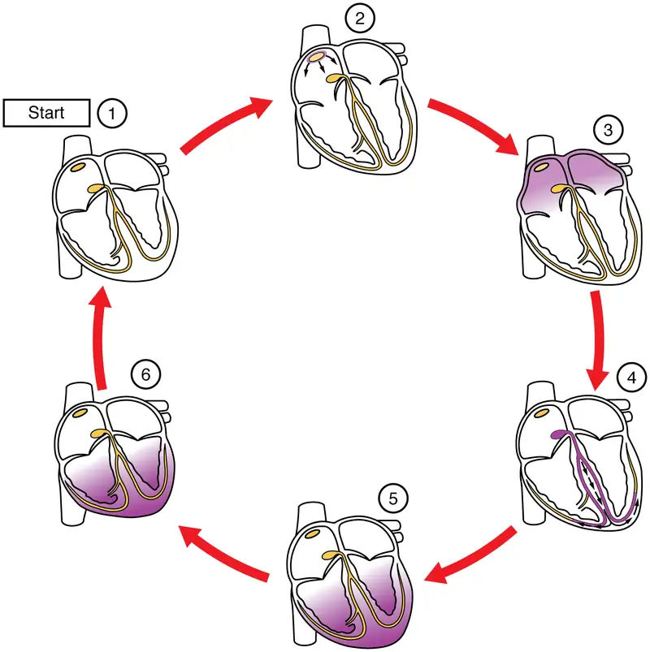
The electrical event, the wave of depolarization, is the trigger for muscular contraction. The wave of depolarization begins in the right atrium, and the impulse spreads across the superior portions of both atria and then down through the contractile cells. The contractile cells then begin contraction from the superior to the inferior portions of the atria, efficiently pumping blood into the ventricles.
Atrioventricular (AV) Node¶
The atrioventricular (AV) node is a second clump of specialized myocardial conductive cells, located in the inferior portion of the right atrium within the atrioventricular septum. The septum prevents the impulse from spreading directly to the ventricles without passing through the AV node. There is a critical pause before the AV node depolarizes and transmits the impulse to the atrioventricular bundle (see Figure 19.19, step 3). This delay in transmission is partially attributable to the small diameter of the cells of the node, which slow the impulse. Also, conduction between nodal cells is less efficient than between conducting cells. These factors mean that it takes the impulse approximately 100 ms to pass through the node. This pause is critical to heart function, as it allows the atrial cardiomyocytes to complete their contraction that pumps blood into the ventricles before the impulse is transmitted to the cells of the ventricle itself. With extreme stimulation by the SA node, the AV node can transmit impulses maximally at 220 per minute. This establishes the typical maximum heart rate in a healthy young individual. Damaged hearts or those stimulated by drugs can contract at higher rates, but at these rates, the heart can no longer effectively pump blood.
Atrioventricular Bundle (Bundle of His), Bundle Branches, and Purkinje Fibers¶
Arising from the AV node, the atrioventricular bundle, or bundle of His, proceeds through the interventricular septum before dividing into two atrioventricular bundle branches, commonly called the left and right bundle branches. The left bundle branch has two fascicles. The left bundle branch supplies the left ventricle, and the right bundle branch the right ventricle. Since the left ventricle is much larger than the right, the left bundle branch is also considerably larger than the right. Portions of the right bundle branch are found in the moderator band and supply the right papillary muscles. Because of this connection, each papillary muscle receives the impulse at approximately the same time, so they begin to contract simultaneously just prior to the remainder of the myocardial contractile cells of the ventricles. This is believed to allow tension to develop on the chordae tendineae prior to right ventricular contraction. There is no corresponding moderator band on the left. Both bundle branches descend and reach the apex of the heart where they connect with the Purkinje fibers (see Figure 19.19, step 4). This passage takes approximately 25 ms.
The Purkinje fibers are additional myocardial conductive fibers that spread the impulse to the myocardial contractile cells in the ventricles. They extend throughout the myocardium from the apex of the heart toward the atrioventricular septum and the base of the heart. The Purkinje fibers have a fast inherent conduction rate, and the electrical impulse reaches all of the ventricular muscle cells in about 75 ms (see Figure 19.19, step 5). Since the electrical stimulus begins at the apex, the contraction also begins at the apex and travels toward the base of the heart, similar to squeezing a tube of toothpaste from the bottom. This allows the blood to be pumped out of the ventricles and into the aorta and pulmonary trunk. The total time elapsed from the initiation of the impulse in the SA node until depolarization of the ventricles is approximately 225 ms.
Membrane Potentials and Ion Movement in Cardiac Conductive Cells¶
Action potentials are considerably different between cardiac conductive cells and cardiac contractive cells. While Na+ and K+ play essential roles, Ca2+ is also critical for both types of cells. Unlike skeletal muscles and neurons, cardiac conductive cells do not have a stable resting potential. Conductive cells contain a series of sodium ion channels that allow a normal and slow influx of sodium ions that causes the membrane potential to rise slowly from an initial value of −60 mV up to about –40 mV. The resulting movement of sodium ions creates spontaneous depolarization (or prepotential depolarization). At this point, calcium ion channels open and Ca2+enters the cell, further depolarizing it at a more rapid rate until it reaches a value of approximately +15 mV. At this point, the calcium ion channels close and K+ channels open, allowing outflux of K+ and resulting in repolarization. When the membrane potential reaches approximately −60 mV, the K+channels close and Na+ channels open, and the prepotential phase begins again. This phenomenon explains the autorhythmicity properties of cardiac muscle (Figure 19.20).
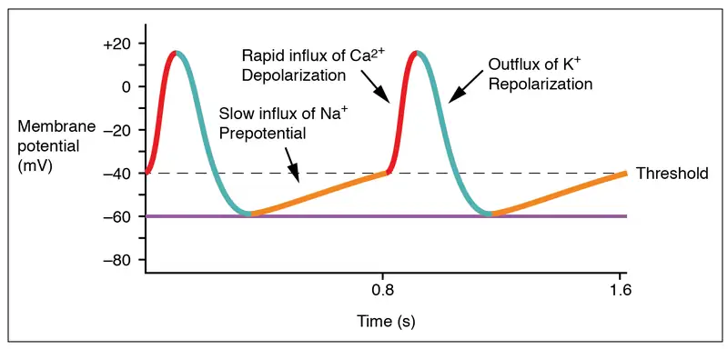
Membrane Potentials and Ion Movement in Cardiac Contractile Cells¶
There is a distinctly different electrical pattern involving the contractile cells. In this case, there is a rapid depolarization, followed by a plateau phase and then repolarization. This phenomenon accounts for the long refractory periods required for the cardiac muscle cells to pump blood effectively before they are capable of firing for a second time. These cardiac myocytes normally do not initiate their own electrical potential but rather wait for an impulse to reach them.
Contractile cells demonstrate a much more stable resting phase than conductive cells at approximately −80 mV for cells in the atria and −90 mV for cells in the ventricles. Despite this initial difference, the other components of their action potentials are virtually identical. In both cases, when stimulated by an action potential, voltage-gated channels rapidly open, beginning the positive-feedback mechanism of depolarization. This rapid influx of positively charged ions raises the membrane potential to approximately +30 mV, at which point the sodium channels close. The rapid depolarization period typically lasts 3–5 ms. Depolarization is followed by the plateau phase, in which membrane potential declines relatively slowly. This is due in large part to the opening of the slow Ca2+ channels, allowing Ca2+ to enter the cell while few K+ channels are open, allowing K+ to exit the cell. The relatively long plateau phase lasts approximately 175 ms. Once the membrane potential reaches approximately zero, the Ca2+channels close and K+channels open, allowing K+to exit the cell. The repolarization lasts approximately 75 ms. At this point, membrane potential drops until it reaches resting levels once more and the cycle repeats. The entire event lasts between 250 and 300 ms (Figure 19.21).
The absolute refractory period for cardiac contractile muscle lasts approximately 200 ms, and the relative refractory period lasts approximately 50 ms, for a total of 250 ms. This extended period is critical, since the heart muscle must contract to pump blood effectively and the contraction must follow the electrical events. Without extended refractory periods, premature contractions would occur in the heart and would not be compatible with life.
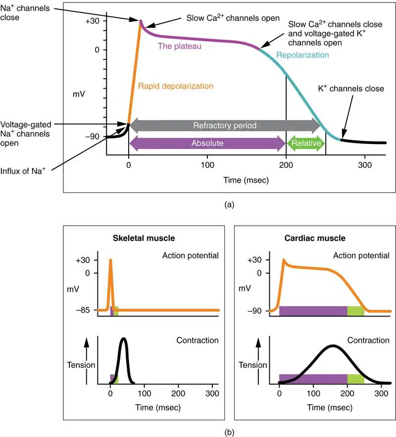
Calcium Ions¶
Calcium ions play two critical roles in the physiology of cardiac muscle. Their influx through slow calcium channels accounts for the prolonged plateau phase and absolute refractory period that enable cardiac muscle to function properly. Calcium ions also combine with the regulatory protein troponin in the troponin-tropomyosin complex; this complex removes the inhibition that prevents the heads of the myosin molecules from forming cross bridges with the active sites on actin that provide the power stroke of contraction. This mechanism is virtually identical to that of skeletal muscle. Approximately 20 percent of the calcium required for contraction is supplied by the influx of Ca2+ during the plateau phase. The remaining Ca2+ for contraction is released from storage in the sarcoplasmic reticulum.
Comparative Rates of Conduction System Firing¶
The pattern of prepotential or spontaneous depolarization, followed by rapid depolarization and repolarization just described, are seen in the SA node and a few other conductive cells in the heart. Since the SA node is the pacemaker, it reaches threshold faster than any other component of the conduction system. It will initiate the impulses spreading to the other conducting cells. The SA node, without nervous or endocrine control, would initiate a heart impulse approximately 80–100 times per minute. Although each component of the conduction system is capable of generating its own impulse, the rate progressively slows as you proceed from the SA node to the Purkinje fibers. Without the SA node, the AV node would generate a heart rate of 40–60 beats per minute. If the AV node were blocked, the atrioventricular bundle would fire at a rate of approximately 30–40 impulses per minute. The bundle branches would have an inherent rate of 20–30 impulses per minute, and the Purkinje fibers would fire at 15–20 impulses per minute. While a few exceptionally trained aerobic athletes demonstrate resting heart rates in the range of 30–40 beats per minute (the lowest recorded figure is 28 beats per minute for Miguel Indurain, a cyclist), for most individuals, rates lower than 50 beats per minute would indicate a condition called bradycardia. Depending upon the specific individual, as rates fall much below this level, the heart would be unable to maintain adequate flow of blood to vital tissues, initially resulting in decreasing loss of function across the systems, unconsciousness, and ultimately death.
Electrocardiogram¶
By careful placement of surface electrodes on the body, it is possible to record the complex, compound electrical signal of the heart. This tracing of the electrical signal is the electrocardiogram (ECG), also commonly abbreviated EKG (K coming kardiology, from the German term for cardiology). Careful analysis of the ECG reveals a detailed picture of both normal and abnormal heart function, and is an indispensable clinical diagnostic tool. The standard electrocardiograph (the instrument that generates an ECG) uses 3, 5, or 12 leads. The greater the number of leads an electrocardiograph uses, the more information the ECG provides. The term “lead” may be used to refer to the cable from the electrode to the electrical recorder, but it typically describes the voltage difference between two of the electrodes. The 12-lead electrocardiograph uses 10 electrodes placed in standard locations on the patient’s skin (Figure 19.22). In continuous ambulatory electrocardiographs, the patient wears a small, portable, battery-operated device known as a Holter monitor, or simply a Holter, that continuously monitors heart electrical activity, typically for a period of 24 hours during the patient’s normal routine.
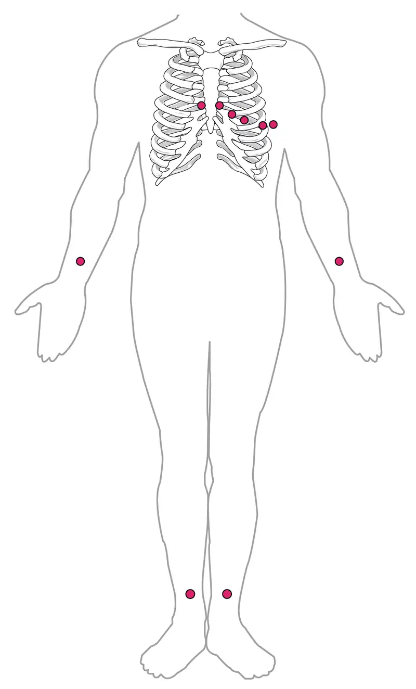
A normal ECG tracing is presented in Figure 19.23. Each component, segment, and interval is labeled and corresponds to important electrical events, demonstrating the relationship between these events and contraction in the heart.
There are five prominent points on the ECG: the P wave, the QRS complex, and the T wave. The small P wave represents the depolarization of the atria. The atria begin contracting approximately 25 ms after the start of the P wave. The large QRS complex represents the depolarization of the ventricles, which requires a much stronger electrical signal because of the larger size of the ventricular cardiac muscle. The ventricles begin to contract as the QRS reaches the peak of the R wave. Lastly, the T wave represents the repolarization of the ventricles. The repolarization of the atria occurs during the QRS complex, which masks it on an ECG.
The major segments and intervals of an ECG tracing are indicated in Figure 19.23. Segments are defined as the regions between two waves. Intervals include one segment plus one or more waves. For example, the PR segment begins at the end of the P wave and ends at the beginning of the QRS complex. The PR interval starts at the beginning of the P wave and ends with the beginning of the QRS complex. The PR interval is more clinically relevant, as it measures the duration from the beginning of atrial depolarization (the P wave) to the initiation of the QRS complex. Since the Q wave may be difficult to view in some tracings, the measurement is often extended to the R that is more easily visible. Should there be a delay in passage of the impulse from the SA node to the AV node, it would be visible in the PR interval. Figure 19.24 correlates events of heart contraction to the corresponding segments and intervals of an ECG.
Interactive
Visit this site for a more detailed analysis of ECGs.
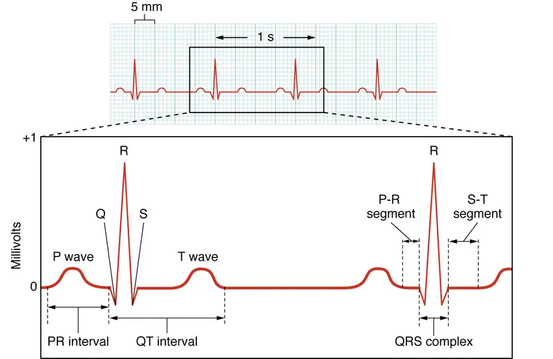
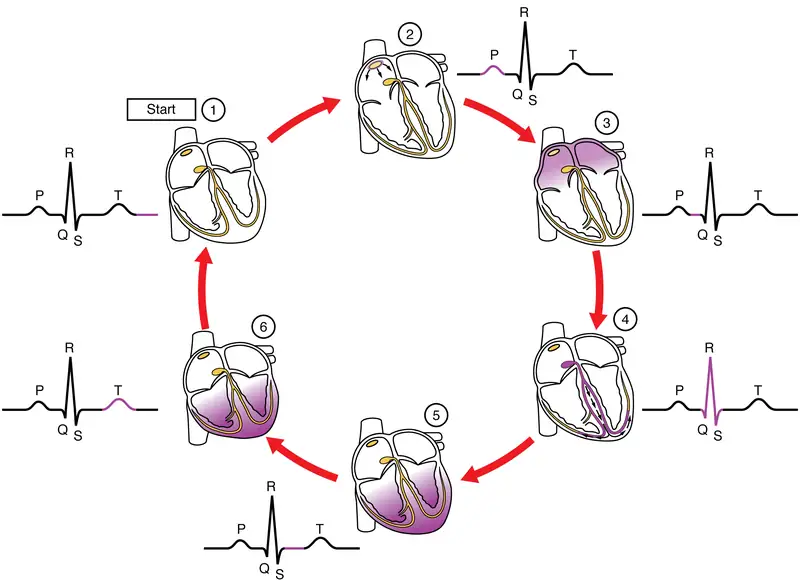
Everyday Connection: ECG Abnormalities
Occassionally, an area of the heart other than the SA node will initiate an impulse that will be followed by a premature contraction. Such an area, which may actually be a component of the conduction system or some other contractile cells, is known as an ectopic focus or ectopic pacemaker. An ectopic focus may be stimulated by localized ischemia; exposure to certain drugs, including caffeine, digitalis, or acetylcholine; elevated stimulation by both sympathetic or parasympathetic divisions of the autonomic nervous system; or a number of disease or pathological conditions. Occasional occurences are generally transitory and nonlife threatening, but if the condition becomes chronic, it may lead to either an arrhythmia, a deviation from the normal pattern of impulse conduction and contraction, or to fibrillation, an uncoordinated beating of the heart.
While interpretation of an ECG is possible and extremely valuable after some training, a full understanding of the complexities and intricacies generally requires several years of experience. In general, the size of the electrical variations, the duration of the events, and detailed vector analysis provide the most comprehensive picture of cardiac function. For example, an amplified P wave may indicate enlargement of the atria, an enlarged Q wave may indicate a MI, and an enlarged suppressed or inverted Q wave often indicates enlarged ventricles. T waves often appear flatter when insufficient oxygen is being delivered to the myocardium. An elevation of the ST segment above baseline is often seen in patients with an acute MI, and may appear depressed below the baseline when hypoxia is occurring.
As useful as analyzing these electrical recordings may be, there are limitations. For example, not all areas suffering a MI may be obvious on the ECG. Additionally, it will not reveal the effectiveness of the pumping, which requires further testing, such as an ultrasound test called an echocardiogram or nuclear medicine imaging. It is also possible for there to be pulseless electrical activity, which will show up on an ECG tracing, although there is no corresponding pumping action. Common abnormalities that may be detected by the ECGs are shown in Figure 19.25.
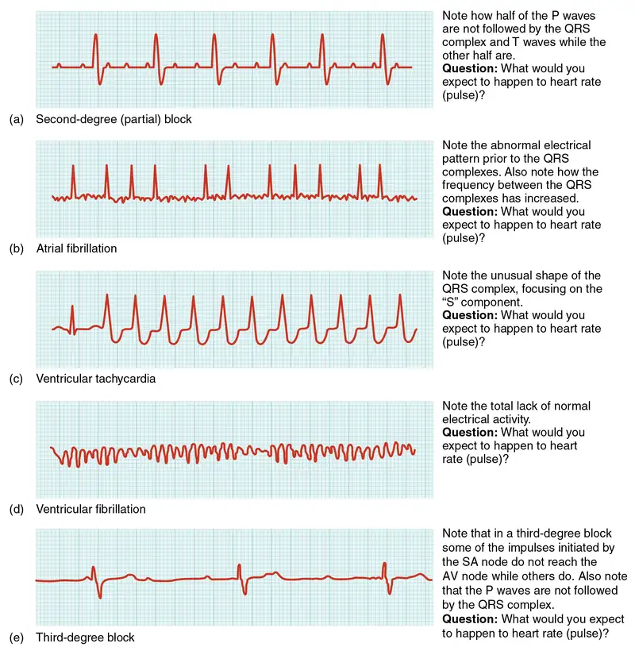
Interactive
Visit this site for a more complete library of abnormal ECGs.
Everyday Connection: External Automated Defibrillators
In the event that the electrical activity of the heart is severely disrupted, cessation of electrical activity or fibrillation may occur. In fibrillation, the heart beats in a wild, uncontrolled manner, which prevents it from being able to pump effectively. Atrial fibrillation (see Figure 19.25b) is a serious condition, but as long as the ventricles continue to pump blood, the patient’s life may not be in immediate danger. Ventricular fibrillation (see Figure 19.25d) is a medical emergency that requires life support, because the ventricles are not effectively pumping blood. In a hospital setting, it is often described as “code blue.” If untreated for as little as a few minutes, ventricular fibrillation may lead to brain death. The most common treatment is defibrillation, which uses special paddles to apply a charge to the heart from an external electrical source in an attempt to establish a normal sinus rhythm (Figure 19.26). A defibrillator effectively stops the heart so that the SA node can trigger a normal conduction cycle. Because of their effectiveness in reestablishing a normal sinus rhythm, external automated defibrillators (EADs) are being placed in areas frequented by large numbers of people, such as schools, restaurants, and airports. These devices contain simple and direct verbal instructions that can be followed by nonmedical personnel in an attempt to save a life.
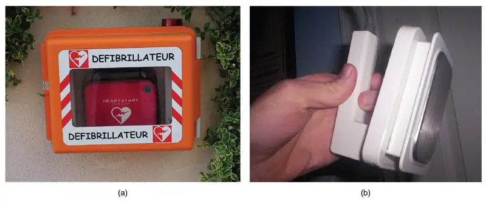
A heart block refers to an interruption in the normal conduction pathway. The nomenclature for these is very straightforward. SA nodal blocks occur within the SA node. AV nodal blocks occur within the AV node. Infra-Hisian blocks involve the bundle of His. Bundle branch blocks occur within either the left or right atrioventricular bundle branches. Hemiblocks are partial and occur within one or more fascicles of the atrioventricular bundle branch. Clinically, the most common types are the AV nodal and infra-Hisian blocks.
AV blocks are often described by degrees. A first-degree or partial block indicates a delay in conduction between the SA and AV nodes. This can be recognized on the ECG as an abnormally long PR interval. A second-degree or incomplete block occurs when some impulses from the SA node reach the AV node and continue, while others do not. In this instance, the ECG would reveal some P waves not followed by a QRS complex, while others would appear normal. In the third-degree or complete block, there is no correlation between atrial activity (the P wave) and ventricular activity (the QRS complex). Even in the event of a total SA block, the AV node will assume the role of pacemaker and continue initiating contractions at 40–60 contractions per minute, which is adequate to maintain consciousness. Second- and third-degree blocks are demonstrated on the ECG presented in Figure 19.25.
When arrhythmias become a chronic problem, the heart maintains a junctional rhythm, which originates in the AV node. In order to speed up the heart rate and restore full sinus rhythm, a cardiologist can implant an artificial pacemaker, which delivers electrical impulses to the heart muscle to ensure that the heart continues to contract and pump blood effectively. These artificial pacemakers are programmable by the cardiologists and can either provide stimulation temporarily upon demand or on a continuous basis. Some devices also contain built-in defibrillators.
Cardiac Muscle Metabolism¶
Normally, cardiac muscle metabolism is entirely aerobic. Oxygen from the lungs is brought to the heart, and every other organ, attached to the hemoglobin molecules within the erythrocytes. Heart cells also store appreciable amounts of oxygen in myoglobin. Normally, these two mechanisms, circulating oxygen and oxygen attached to myoglobin, can supply sufficient oxygen to the heart, even during peak performance.
Fatty acids and glucose from the circulation are broken down within the mitochondria to release energy in the form of ATP. Both fatty acid droplets and glycogen are stored within the sarcoplasm and provide additional nutrient supply. (Seek additional content for more detail about metabolism.)
19.3 Cardiac Cycle¶
Learning Objectives
By the end of this section, you will be able to:
- Describe the relationship between blood pressure and blood flow
- Summarize the events of the cardiac cycle
- Compare atrial and ventricular systole and diastole
- Relate heart sounds detected by auscultation to action of heart’s valves
The period of time that begins with contraction of the atria and ends with ventricular relaxation is known as the cardiac cycle (Figure 19.27). The period of contraction that the heart undergoes while it pumps blood into circulation is called systole. The period of relaxation that occurs as the chambers fill with blood is called diastole. Both the atria and ventricles undergo systole and diastole, and it is essential that these components be carefully regulated and coordinated to ensure blood is pumped efficiently to the body.
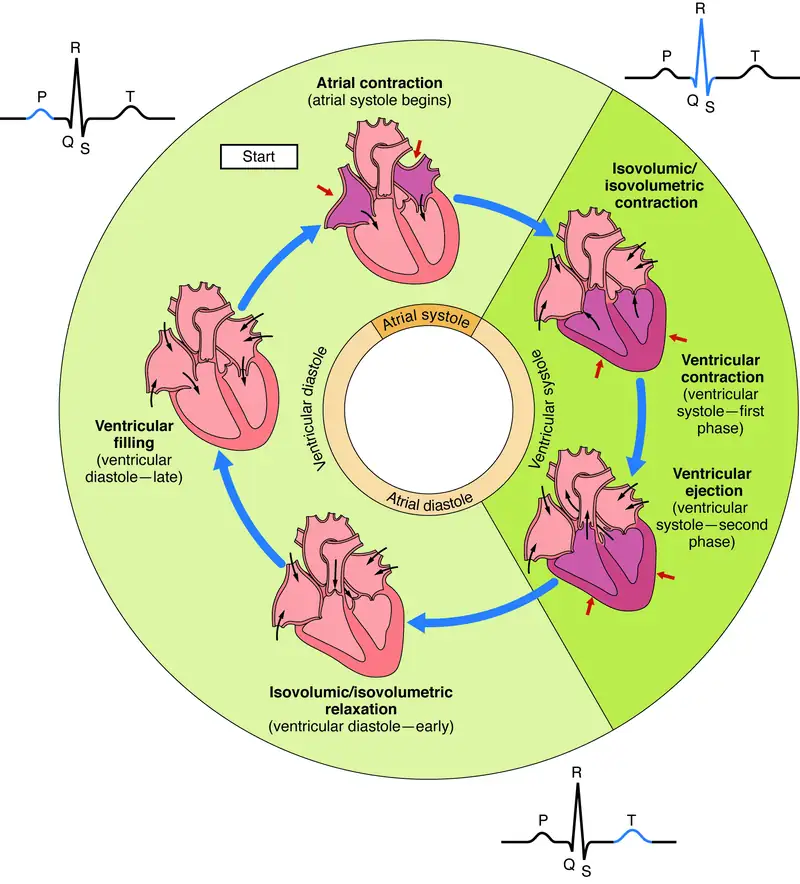
Pressures and Flow¶
Fluids, whether gases or liquids, are materials that flow according to pressure gradients—that is, they move from regions that are higher in pressure to regions that are lower in pressure. Accordingly, when the heart chambers are relaxed (diastole), blood will flow into the atria from the veins, which are higher in pressure. As blood flows into the atria, the pressure will rise, so the blood will initially move passively from the atria into the ventricles. When the action potential triggers the muscles in the atria to contract (atrial systole), the pressure within the atria rises further, pumping blood into the ventricles. During ventricular systole, pressure rises in the ventricles, pumping blood into the pulmonary trunk from the right ventricle and into the aorta from the left ventricle. Again, as you consider this flow and relate it to the conduction pathway, the elegance of the system should become apparent.
Phases of the Cardiac Cycle¶
At the beginning of the cardiac cycle, both the atria and ventricles are relaxed (diastole). Blood is flowing into the right atrium from the superior and inferior venae cavae and the coronary sinus. Blood flows into the left atrium from the four pulmonary veins. The two atrioventricular valves, the tricuspid and mitral valves, are both open, so blood flows unimpeded from the atria and into the ventricles. Approximately 70–80 percent of ventricular filling occurs by this method. The two semilunar valves, the pulmonary and aortic valves, are closed, preventing backflow of blood into the right and left ventricles from the pulmonary trunk on the right and the aorta on the left.
Atrial Systole and Diastole¶
Contraction of the atria follows depolarization, represented by the P wave of the ECG. As the atrial muscles contract from the superior portion of the atria toward the atrioventricular septum, pressure rises within the atria and blood is pumped into the ventricles through the open atrioventricular (tricuspid, and mitral or bicuspid) valves. At the start of atrial systole, the ventricles are normally filled with approximately 70–80 percent of their capacity due to inflow during diastole. Atrial contraction, also referred to as the “atrial kick,” contributes the remaining 20–30 percent of filling (see Figure 19.27). Atrial systole lasts approximately 100 ms and ends prior to ventricular systole, as the atrial muscle returns to diastole and blood flow into the atria resumes.
Ventricular Systole¶
Ventricular systole (see Figure 19.27) follows the depolarization of the ventricles and is represented by the QRS complex in the ECG. It may be conveniently divided into two phases, lasting a total of 270 ms. At the end of atrial systole and just prior to ventricular contraction, the ventricles contain approximately 130 mL blood in a resting adult in a standing position. This volume is known as the end diastolic volume (EDV) or preload.
Initially, as the muscles in the ventricle contract, the pressure of the blood within the chamber rises, but it is not yet high enough to open the semilunar (pulmonary and aortic) valves and be ejected from the heart. However, blood pressure quickly rises above that of the atria that are now relaxed and in diastole. This increase in pressure causes blood to flow back toward the atria, closing the tricuspid and mitral valves. Since blood is not being ejected from the ventricles at this early stage, the volume of blood within the chamber remains constant. Consequently, this initial phase of ventricular systole is known as isovolumic contraction, also called isovolumetric contraction (see Figure 19.27).
In the second phase of ventricular systole, the ventricular ejection phase, the contraction of the ventricular muscle has raised the pressure within the ventricle to the point that it is greater than the pressures in the pulmonary trunk and the aorta. Blood is pumped from the heart, pushing open the pulmonary and aortic semilunar valves. Pressure generated by the left ventricle will be appreciably greater than the pressure generated by the right ventricle, since the existing pressure in the aorta will be so much higher. Nevertheless, both ventricles pump the same amount of blood. This quantity is referred to as stroke volume. Stroke volume will normally be in the range of 70–80 mL. Since ventricular systole began with an EDV of approximately 130 mL of blood, this means that there is still 50–60 mL of blood remaining in the ventricle following contraction. This volume of blood is known as the end systolic volume (ESV).
Ventricular Diastole¶
Ventricular relaxation, or diastole, follows repolarization of the ventricles and is represented by the T wave of the ECG. It too is divided into two distinct phases and lasts approximately 430 ms.
During the early phase of ventricular diastole, as the ventricular muscle relaxes, pressure on the remaining blood within the ventricle begins to fall. When pressure within the ventricles drops below pressure in both the pulmonary trunk and aorta, blood flows back toward the heart, producing the dicrotic notch (small dip) seen in blood pressure tracings. The semilunar valves close to prevent backflow into the heart. Since the atrioventricular valves remain closed at this point, there is no change in the volume of blood in the ventricle, so the early phase of ventricular diastole is called the isovolumic ventricular relaxation phase, also called isovolumetric ventricular relaxation phase (see Figure 19.27).
In the second phase of ventricular diastole, called late ventricular diastole, as the ventricular muscle relaxes, pressure on the blood within the ventricles drops even further. Eventually, it drops below the pressure in the atria. When this occurs, blood flows from the atria into the ventricles, pushing open the tricuspid and mitral valves. As pressure drops within the ventricles, blood flows from the major veins into the relaxed atria and from there into the ventricles. Both chambers are in diastole, the atrioventricular valves are open, and the semilunar valves remain closed (see Figure 19.27). The cardiac cycle is complete.
Figure 19.28 illustrates the relationship between the cardiac cycle and the ECG.
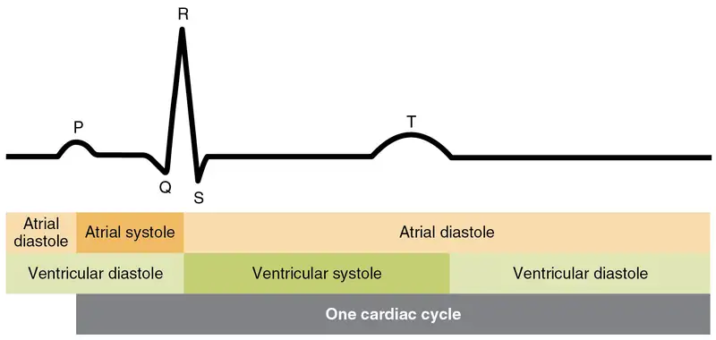
Heart Sounds¶
One of the simplest, yet effective, diagnostic techniques applied to assess the state of a patient’s heart is auscultation using a stethoscope.
In a normal, healthy heart, there are only two audible heart sounds: S1 and S2. S1 is the sound created by the closing of the atrioventricular valves during ventricular contraction and is normally described as a “lub,” or first heart sound. The second heart sound, S2, is the sound of the closing of the semilunar valves during ventricular diastole and is described as a “dub” (Figure 19.29). In both cases, as the valves close, the openings within the atrioventricular septum guarded by the valves will become reduced, and blood flow through the opening will become more turbulent until the valves are fully closed. There is a third heart sound, S3, but it is rarely heard in healthy individuals. It may be the sound of blood flowing into the atria, or blood sloshing back and forth in the ventricle, or even tensing of the chordae tendineae. S3 may be heard in youth, some athletes, and pregnant people. If the sound is heard later in life, it may indicate congestive heart failure, warranting further tests. Some cardiologists refer to the collective S1, S2, and S3 sounds as the “Kentucky gallop,” because they mimic those produced by a galloping horse. The fourth heart sound, S4, results from the contraction of the atria pushing blood into a stiff or hypertrophic ventricle, indicating failure of the left ventricle. S4 occurs prior to S1 and the collective sounds S4, S1, and S2 are referred to by some cardiologists as the “Tennessee gallop,” because of their similarity to the sound produced by a galloping horse with a different gait. A few individuals may have both S3and S4, and this combined sound is referred to as S7.
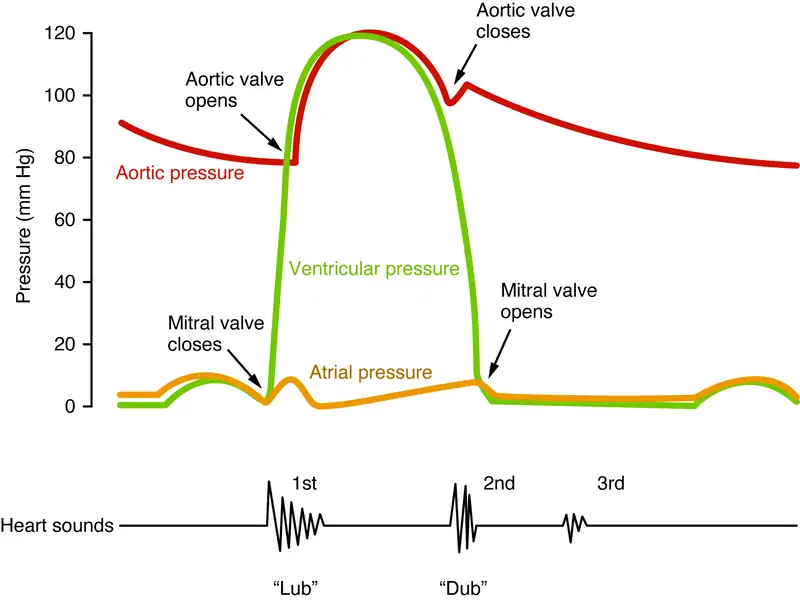
The term murmur is used to describe an unusual sound coming from the heart that is caused by the turbulent flow of blood. Murmurs are graded on a scale of 1 to 6, with 1 being the most common, the most difficult sound to detect, and the least serious. The most severe is a 6. Phonocardiograms or auscultograms can be used to record both normal and abnormal sounds using specialized electronic stethoscopes.
During auscultation, it is common practice for the clinician to ask the patient to breathe deeply. This procedure not only allows for listening to airflow, but it may also amplify heart murmurs. Inhalation increases blood flow into the right side of the heart and may increase the amplitude of right-sided heart murmurs. Expiration partially restricts blood flow into the left side of the heart and may amplify left-sided heart murmurs. Figure 19.30 indicates proper placement of the bell of the stethoscope to facilitate auscultation.
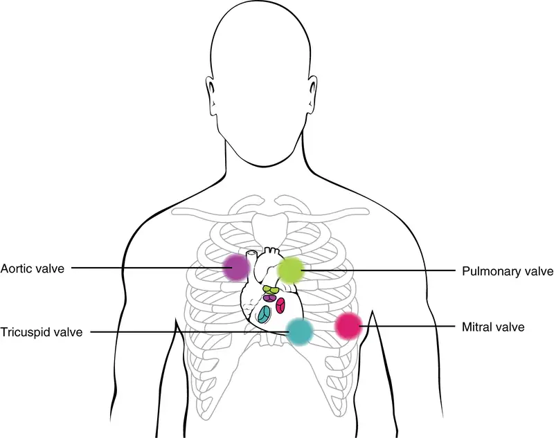
19.4 Cardiac Physiology¶
Learning Objectives
By the end of this section, you will be able to:
- Relate heart rate to cardiac output
- Describe the effect of exercise on heart rate
- Identify cardiovascular centers and cardiac reflexes that regulate heart function
- Describe factors affecting heart rate
- Distinguish between positive and negative factors that affect heart contractility
- Summarize factors affecting stroke volume and cardiac output
- Describe the cardiac response to variations in blood flow and pressure
The autorhythmicity inherent in cardiac cells keeps the heart beating at a regular pace; however, the heart is regulated by and responds to outside influences as well. Neural and endocrine controls are vital to the regulation of cardiac function. In addition, the heart is sensitive to several environmental factors, including electrolytes.
Resting Cardiac Output¶
Cardiac output (CO) is a measurement of the amount of blood pumped by each ventricle in one minute. To calculate this value, multiply stroke volume (SV), the amount of blood pumped by each ventricle, by heart rate (HR), in contractions per minute (or beats per minute, bpm). It can be represented mathematically by the following equation:
CO = HR × SV
SV is normally measured using an echocardiogram to record EDV and ESV, and calculating the difference: SV = EDV – ESV. SV can also be measured using a specialized catheter, but this is an invasive procedure and far more dangerous to the patient. A mean SV for a resting 70-kg (150-lb) individual would be approximately 70 mL. There are several important variables, including size of the heart, physical and mental condition of the individual, sex, contractility, duration of contraction, preload or EDV, and afterload or resistance. Normal range for SV would be 55–100 mL. An average resting HR would be approximately 75 bpm but could range from 60–100 in some individuals.
Using these numbers, the mean CO is 5.25 L/min, with a range of 4.0–8.0 L/min. Remember, however, that these numbers refer to CO from each ventricle separately, not the total for the heart. Factors influencing CO are summarized in Figure 19.31.
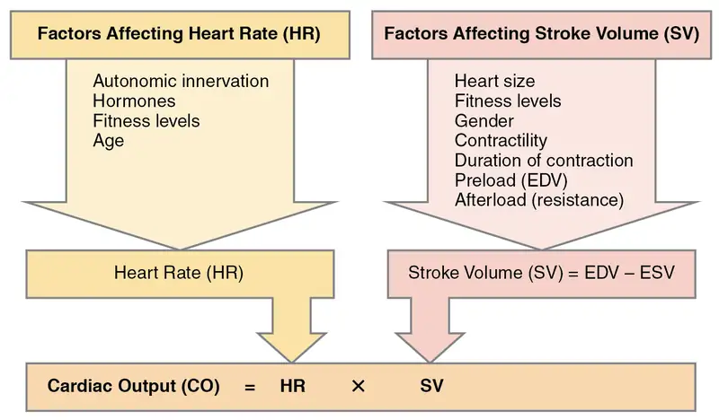
SVs are also used to calculate ejection fraction, which is the portion of the blood that is pumped or ejected from the heart with each contraction. To calculate ejection fraction, SV is divided by EDV. Despite the name, the ejection fraction is normally expressed as a percentage. Ejection fractions range from approximately 55–70 percent, with a mean of 58 percent.
Exercise and Maximum Cardiac Output¶
In healthy young individuals, HR may increase to 150 bpm during exercise. SV can also increase from 70 to approximately 130 mL due to increased strength of contraction. This would increase CO to approximately 19.5 L/min, 4–5 times the resting rate. Top cardiovascular athletes can achieve even higher levels. At their peak performance, they may increase resting CO by 7–8 times.
Since the heart is a muscle, exercising it increases its efficiency. The difference between maximum and resting CO is known as the cardiac reserve. It measures the residual capacity of the heart to pump blood.
Heart Rates¶
HRs vary considerably, not only with exercise and fitness levels, but also with age. Newborn resting HRs may be 120 bpm. HR gradually decreases until young adulthood and then gradually increases again with age.
Maximum HRs are normally in the range of 200–220 bpm, although there are some extreme cases in which they may reach higher levels. As one ages, the ability to generate maximum rates decreases. This may be estimated by taking the maximal value of 220 bpm and subtracting the individual’s age. So a 40-year-old individual would be expected to hit a maximum rate of approximately 180, and a 60-year-old person would achieve a HR of 160.
Disorders of the Heart: Abnormal Heart Rates
For an adult, normal resting HR will be in the range of 60–100 bpm. Bradycardia is the condition in which resting rate drops below 60 bpm, and tachycardia is the condition in which the resting rate is above 100 bpm. Trained athletes typically have very low HRs. If the patient is not exhibiting other symptoms, such as weakness, fatigue, dizziness, fainting, chest discomfort, palpitations, or respiratory distress, bradycardia is not considered clinically significant. However, if any of these symptoms are present, they may indicate that the heart is not providing sufficient oxygenated blood to the tissues. The term relative bradycardia may be used with a patient who has a HR in the normal range but is still suffering from these symptoms. Most patients remain asymptomatic as long as the HR remains above 50 bpm.
Bradycardia may be caused by either inherent factors or causes external to the heart. While the condition may be inherited, typically it is acquired in older individuals. Inherent causes include abnormalities in either the SA or AV node. If the condition is serious, a pacemaker may be required. Other causes include ischemia to the heart muscle or diseases of the heart vessels or valves. External causes include metabolic disorders, pathologies of the endocrine system often involving the thyroid, electrolyte imbalances, neurological disorders including inappropriate autonomic responses, autoimmune pathologies, over-prescription of beta blocker drugs that reduce HR, recreational drug use, or even prolonged bed rest. Treatment relies upon establishing the underlying cause of the disorder and may necessitate supplemental oxygen.
Tachycardia is not normal in a resting patient but may be detected in pregnant people or individuals experiencing extreme stress. In the latter case, it would likely be triggered by stimulation from the limbic system or disorders of the autonomic nervous system. In some cases, tachycardia may involve only the atria. Some individuals may remain asymptomatic, but when present, symptoms may include dizziness, shortness of breath, lightheadedness, rapid pulse, heart palpations, chest pain, or fainting (syncope). While tachycardia is defined as a HR above 100 bpm, there is considerable variation among people. Further, the normal resting HRs of children are often above 100 bpm, but this is not considered to be tachycardia. Many causes of tachycardia may be benign, but the condition may also be correlated with fever, anemia, hypoxia, hyperthyroidism, hypersecretion of catecholamines, some cardiomyopathies, some disorders of the valves, and acute exposure to radiation. Elevated rates in an exercising or resting patient are normal and expected. Resting rate should always be taken after recovery from exercise. Treatment depends upon the underlying cause but may include medications, implantable cardioverter defibrillators, ablation, or surgery.
Correlation Between Heart Rates and Cardiac Output¶
Initially, physiological conditions that cause HR to increase also trigger an increase in SV. During exercise, the rate of blood returning to the heart increases. However as the HR rises, there is less time spent in diastole and consequently less time for the ventricles to fill with blood. Even though there is less filling time, SV will initially remain high. However, as HR continues to increase, SV gradually decreases due to decreased filling time. CO will initially stabilize as the increasing HR compensates for the decreasing SV, but at very high rates, CO will eventually decrease as increasing rates are no longer able to compensate for the decreasing SV. Consider this phenomenon in a healthy young individual. Initially, as HR increases from resting to approximately 120 bpm, CO will rise. As HR increases from 120 to 160 bpm, CO remains stable, since the increase in rate is offset by decreasing ventricular filling time and, consequently, SV. As HR continues to rise above 160 bpm, CO actually decreases as SV falls faster than HR increases. So although aerobic exercises are critical to maintain the health of the heart, individuals are cautioned to monitor their HR to ensure they stay within the target heart rate range of between 120 and 160 bpm, so CO is maintained. The target HR is loosely defined as the range in which both the heart and lungs receive the maximum benefit from the aerobic workout and is dependent upon age.
Cardiovascular Centers¶
Nervous control over HR is centralized within the two paired cardiovascular centers of the medulla oblongata (Figure 19.32). The cardioaccelerator regions stimulate activity via sympathetic stimulation of the cardioaccelerator nerves, and the cardioinhibitory centers decrease heart activity via parasympathetic stimulation as one component of the vagus nerve, cranial nerve X. During rest, both centers provide slight stimulation to the heart, contributing to autonomic tone. This is a similar concept to tone in skeletal muscles. Normally, vagal stimulation predominates as, left unregulated, the SA node would initiate a sinus rhythm of approximately 100 bpm.
Both sympathetic and parasympathetic stimulations flow through a paired complex network of nerve fibers known as the cardiac plexus near the base of the heart. The cardioaccelerator center also sends additional fibers, forming the cardiac nerves via sympathetic ganglia (the cervical ganglia plus superior thoracic ganglia T1–T4) to both the SA and AV nodes, plus additional fibers to the atria and ventricles. The ventricles are more richly innervated by sympathetic fibers than parasympathetic fibers. Sympathetic stimulation causes the release of the neurotransmitter norepinephrine (NE) at the neuromuscular junction of the cardiac nerves. NE shortens the repolarization period, thus speeding the rate of depolarization and contraction, which results in an increase in HR. It opens chemical- or ligand-gated sodium and calcium ion channels, allowing an influx of positively charged ions.
NE binds to the beta-1 receptor. Some cardiac medications (for example, beta blockers) work by blocking these receptors, thereby slowing HR and are one possible treatment for hypertension. Overprescription of these drugs may lead to bradycardia and even stoppage of the heart.
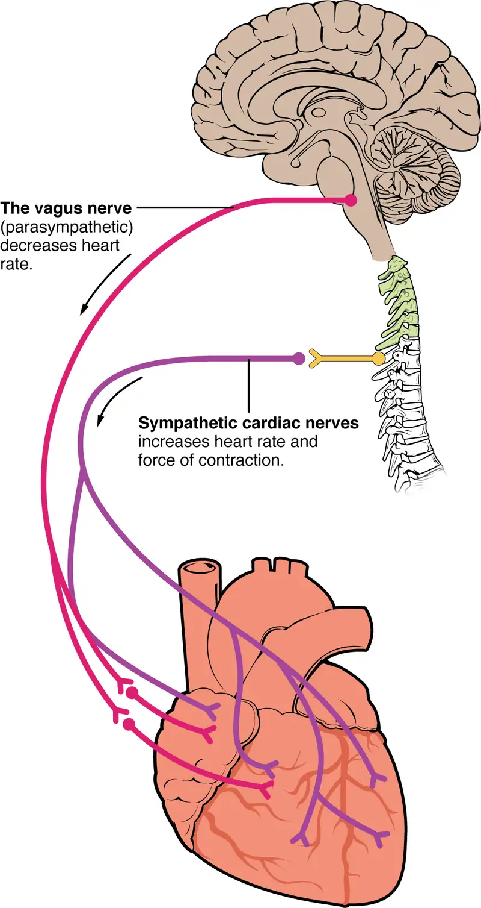
Parasympathetic stimulation originates from the cardioinhibitory region with impulses traveling via the vagus nerve (cranial nerve X). The vagus nerve sends branches to both the SA and AV nodes, and to portions of both the atria and ventricles. Parasympathetic stimulation releases the neurotransmitter acetylcholine (ACh) at the neuromuscular junction. ACh slows HR by opening chemical- or ligand-gated potassium ion channels to slow the rate of spontaneous depolarization, which extends repolarization and increases the time before the next spontaneous depolarization occurs. Without any nervous stimulation, the SA node would establish a sinus rhythm of approximately 100 bpm. Since resting rates are considerably less than this, it becomes evident that parasympathetic stimulation normally slows HR. This is similar to an individual driving a car with one foot on the brake pedal. To speed up, one need merely remove one’s foot from the break and let the engine increase speed. In the case of the heart, decreasing parasympathetic stimulation decreases the release of ACh, which allows HR to increase up to approximately 100 bpm. Any increases beyond this rate would require sympathetic stimulation. Figure 19.33 illustrates the effects of parasympathetic and sympathetic stimulation on the normal sinus rhythm.
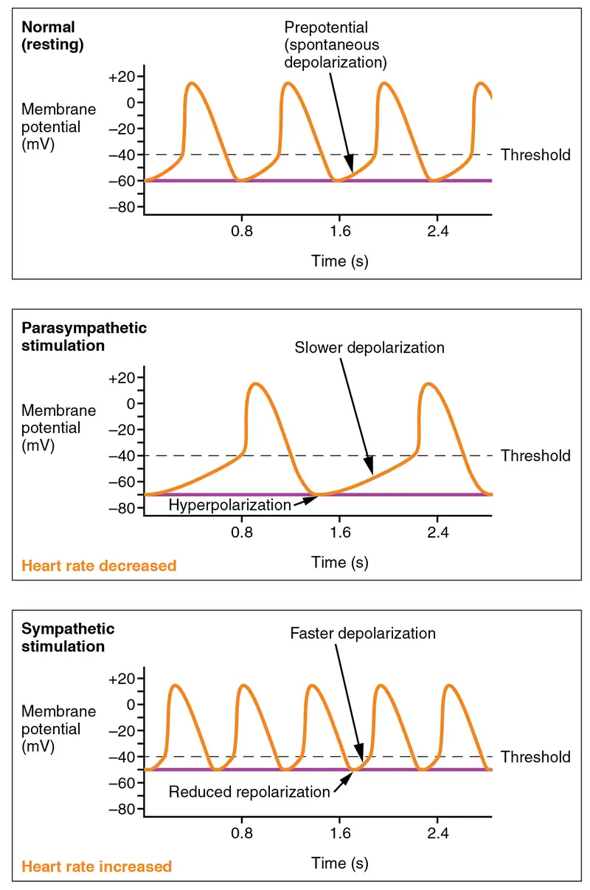
Input to the Cardiovascular Center¶
The cardiovascular center receives input from a series of visceral receptors with impulses traveling through visceral sensory fibers within the vagus and sympathetic nerves via the cardiac plexus. Among these receptors are various proprioreceptors, baroreceptors, and chemoreceptors, plus stimuli from the limbic system. Collectively, these inputs normally enable the cardiovascular centers to regulate heart function precisely, a process known as cardiac reflexes. Increased physical activity results in increased rates of firing by various proprioreceptors located in muscles, joint capsules, and tendons. Any such increase in physical activity would logically warrant increased blood flow. The cardiac centers monitor these increased rates of firing, and suppress parasympathetic stimulation and increase sympathetic stimulation as needed in order to increase blood flow.
Similarly, baroreceptors are stretch receptors located in the aortic sinus, carotid bodies, the venae cavae, and other locations, including pulmonary vessels and the right side of the heart itself. Rates of firing from the baroreceptors represent blood pressure, level of physical activity, and the relative distribution of blood. The cardiac centers monitor baroreceptor firing to maintain cardiac homeostasis, a mechanism called the baroreceptor reflex. With increased pressure and stretch, the rate of baroreceptor firing increases, and the cardiac centers decrease sympathetic stimulation and increase parasympathetic stimulation. As pressure and stretch decrease, the rate of baroreceptor firing decreases, and the cardiac centers increase sympathetic stimulation and decrease parasympathetic stimulation.
There is a similar reflex, called the atrial reflex or Bainbridge reflex, associated with varying rates of blood flow to the atria. Increased venous return stretches the walls of the atria where specialized baroreceptors are located. However, as the atrial baroreceptors increase their rate of firing and as they stretch due to the increased blood pressure, the cardiac center responds by increasing sympathetic stimulation and inhibiting parasympathetic stimulation to increase HR. The opposite is also true.
Increased metabolic byproducts associated with increased activity, such as carbon dioxide, hydrogen ions, and lactic acid, plus falling oxygen levels, are detected by a suite of chemoreceptors innervated by the glossopharyngeal and vagus nerves. These chemoreceptors provide feedback to the cardiovascular centers about the need for increased or decreased blood flow, based on the relative levels of these substances.
The limbic system can also significantly impact HR related to emotional state. During periods of stress, it is not unusual to identify higher than normal HRs, often accompanied by a surge in the stress hormone cortisol. Individuals experiencing extreme anxiety may manifest panic attacks with symptoms that resemble those of heart attacks. These events are typically transient and treatable. Meditation techniques have been developed to ease anxiety and have been shown to lower HR effectively. Doing simple deep and slow breathing exercises with one’s eyes closed can also significantly reduce this anxiety and HR.
Disorders of the Heart: Broken Heart Syndrome
Extreme stress from such life events as the death of a loved one, an emotional break up, loss of income, or foreclosure of a home may lead to a condition commonly referred to as broken heart syndrome. This condition may also be called Takotsubo cardiomyopathy, transient apical ballooning syndrome, apical ballooning cardiomyopathy, stress-induced cardiomyopathy, Gebrochenes-Herz syndrome, and stress cardiomyopathy. The recognized effects on the heart include congestive heart failure due to a profound weakening of the myocardium not related to lack of oxygen. This may lead to acute heart failure, lethal arrhythmias, or even the rupture of a ventricle. The exact etiology is not known, but several factors have been suggested, including transient vasospasm, dysfunction of the cardiac capillaries, or thickening of the myocardium—particularly in the left ventricle—that may lead to the critical circulation of blood to this region. While many patients survive the initial acute event with treatment to restore normal function, there is a strong correlation with death. Careful statistical analysis by the Jaap Spreeuw and Iqbal Owadally of Bayes Business School in London, revealed that within one year of the death of a loved one, women are more than twice as likely to die and men are six times as likely to die as would otherwise be expected. The same study indicated that longer relationships also had a greater incidence of a person dying soon after the death of their spouse.
Other Factors Influencing Heart Rate¶
Using a combination of autorhythmicity and innervation, the cardiovascular center is able to provide relatively precise control over HR. However, there are a number of other factors that have an impact on HR as well, including epinephrine, NE, and thyroid hormones; levels of various ions including calcium, potassium, and sodium; body temperature; hypoxia; and pH balance (Table 19.1 and Table 19.2). After reading this section, the importance of maintaining homeostasis should become even more apparent.
Table 19.1
| Major Factors Increasing Heart Rate and Force of Contraction | |
|---|---|
| Factor | Effect |
| Cardioaccelerator nerves | Release of norepinephrine by cardioaccelerator nerves |
| Proprioreceptors | Increased firing rates of proprioreceptors (e.g. during exercise) |
| Chemoreceptors | Chemoreceptors sensing decreased levels of O2 or increased levels of H+, CO2 and lactic acid |
| Baroreceptors | Decreased firing rates of baroreceptors (indicating falling blood volume/pressure) |
| Limbic system | Anticipation of physical exercise or strong emotions by the limbic system |
| Catecholamines | Increased epinephrine and norepinephrine release by the adrenal glands |
| Thyroid hormones | Increased T3 and T4 in the blood (released by thyroid) |
| Calcium | Increase in calcium ions in the blood |
| Potassium | Decrease in potassium ions in the blood |
| Sodium | Decrease in sodium ions in the blood |
| Body temperature | Increase in body temperature |
| Nicotine and caffeine | Presence of nicotine, caffeine or other stimulants |
Table 19.2
| Factors Decreasing Heart Rate and Force of Contraction | |
|---|---|
| Factor | Effect |
| Cardioinhibitor nerves (vagus) | Release of acetylcholine by cardioinhibitor nerves |
| Proprioreceptors | Decreased firing rates of proprioreceptors (e.g. during rest) |
| Chemoreceptors | Chemoreceptors sensing increased levels of O2 or decreased levels of H+, CO2 and lactic acid |
| Baroreceptors | Increased firing rates of baroreceptors (indicating rising blood volume/pressure) |
| Limbic system | Anticipation of relaxation by the limbic system |
| Catecholamines | Decreased epinephrine and norepinephrine release by the adrenal glands |
| Thyroid hormones | Decreased T3 and T4 in the blood (released by thyroid) |
| Calcium | Decrease in calcium ions in the blood |
| Potassium | Increase in potassium ions in the blood |
| Sodium | Increase in sodium ions in the blood |
| Body temperature | Decrease in body temperature |
| Opiates and tranquilizers | Presence of opiates (heroin), tranquilizers or other depressants |
Epinephrine and Norepinephrine¶
The catecholamines, epinephrine and NE, secreted by the adrenal medulla form one component of the extended fight-or-flight mechanism. The other component is sympathetic stimulation. Epinephrine and NE have similar effects: binding to the beta-1 receptors, and opening sodium and calcium ion chemical- or ligand-gated channels. The rate of depolarization is increased by this additional influx of positively charged ions, so the threshold is reached more quickly and the period of repolarization is shortened. However, massive releases of these hormones coupled with sympathetic stimulation may actually lead to arrhythmias. There is no parasympathetic stimulation to the adrenal medulla.
Thyroid Hormones¶
In general, increased levels of thyroid hormone, or thyroxin, increase cardiac rate and contractility. The impact of thyroid hormone is typically of a much longer duration than that of the catecholamines. The physiologically active form of thyroid hormone, T3 or triiodothyronine, has been shown to directly enter cardiomyocytes and alter activity at the level of the genome. It also impacts the beta adrenergic response similar to epinephrine and NE described above. Excessive levels of thyroxin may trigger tachycardia.
Calcium¶
Calcium ion levels have great impacts upon both HR and contractility; as the levels of calcium ions increase, so do HR and contractility. High levels of calcium ions (hypercalcemia) may be implicated in a short QT interval and a widened T wave in the ECG. The QT interval represents the time from the start of depolarization to repolarization of the ventricles, and includes the period of ventricular systole. Extremely high levels of calcium may induce cardiac arrest. Drugs known as calcium channel blockers slow HR by binding to these channels and blocking or slowing the inward movement of calcium ions.
Caffeine and Nicotine¶
Caffeine and nicotine are not found naturally within the body. Both of these nonregulated drugs have an excitatory effect on membranes of neurons in general and have a stimulatory effect on the cardiac centers specifically, causing an increase in HR. Caffeine works by increasing the rates of depolarization at the SA node, whereas nicotine stimulates the activity of the sympathetic neurons that deliver impulses to the heart.
Although it is the world’s most widely consumed psychoactive drug, caffeine is legal and not regulated. While precise quantities have not been established, “normal” consumption is not considered harmful to most people, although it may cause disruptions to sleep and acts as a diuretic. Its consumption by pregnant people is cautioned against, although no evidence of negative effects has been confirmed. Tolerance and even physical and mental addiction to the drug result in individuals who routinely consume the substance.
Nicotine, too, is a stimulant and produces addiction. While legal and nonregulated, concerns about nicotine’s safety and documented links to respiratory and cardiac disease have resulted in warning labels on cigarette packages.
Factors Decreasing Heart Rate¶
HR can be slowed when a person experiences altered sodium and potassium levels, hypoxia, acidosis, alkalosis, and hypothermia (see Table 19.1). The relationship between electrolytes and HR is complex, but maintaining electrolyte balance is critical to the normal wave of depolarization. Of the two ions, potassium has the greater clinical significance. Initially, both hyponatremia (low sodium levels) and hypernatremia (high sodium levels) may lead to tachycardia. Severely high hypernatremia may lead to fibrillation, which may cause CO to cease. Severe hyponatremia leads to both bradycardia and other arrhythmias. Hypokalemia (low potassium levels) also leads to arrhythmias, whereas hyperkalemia (high potassium levels) causes the heart to become weak and flaccid, and ultimately to fail.
Acidosis is a condition in which excess hydrogen ions are present, and the patient’s blood expresses a low pH value. Alkalosis is a condition in which there are too few hydrogen ions, and the patient’s blood has an elevated pH. Normal blood pH falls in the range of 7.35–7.45, so a number lower than this range represents acidosis and a higher number represents alkalosis. Recall that enzymes are the regulators or catalysts of virtually all biochemical reactions; they are sensitive to pH and will change shape slightly with values outside their normal range. These variations in pH and accompanying slight physical changes to the active site on the enzyme decrease the rate of formation of the enzyme-substrate complex, subsequently decreasing the rate of many enzymatic reactions, which can have complex effects on HR. Severe changes in pH will lead to denaturation of the enzyme.
The last variable is body temperature. Elevated body temperature is called hyperthermia, and suppressed body temperature is called hypothermia. Slight hyperthermia results in increasing HR and strength of contraction. Hypothermia slows the rate and strength of heart contractions. This distinct slowing of the heart is one component of the larger diving reflex that diverts blood to essential organs while submerged. If sufficiently chilled, the heart will stop beating, a technique that may be employed during open heart surgery. In this case, the patient’s blood is normally diverted to an artificial heart-lung machine to maintain the body’s blood supply and gas exchange until the surgery is complete, and sinus rhythm can be restored. Excessive hyperthermia and hypothermia will both result in death, as enzymes drive the body systems to cease normal function, beginning with the central nervous system.
Stroke Volume¶
Many of the same factors that regulate HR also impact cardiac function by altering SV. While a number of variables are involved, SV is ultimately dependent upon the difference between EDV and ESV. The three primary factors to consider are preload, or the stretch on the ventricles prior to contraction; the contractility, or the force or strength of the contraction itself; and afterload, the force the ventricles must generate to pump blood against the resistance in the vessels. These factors are summarized in Table 19.1 and Table 19.2.
Preload¶
Preload is another way of expressing EDV. Therefore, the greater the EDV is, the greater the preload is. One of the primary factors to consider is filling time, or the duration of ventricular diastole during which filling occurs. The more rapidly the heart contracts, the shorter the filling time becomes, and the lower the EDV and preload are. This effect can be partially overcome by increasing the second variable, contractility, and raising SV, but over time, the heart is unable to compensate for decreased filling time, and preload also decreases.
With increasing ventricular filling, both EDV or preload increase, and the cardiac muscle itself is stretched to a greater degree. At rest, there is little stretch of the ventricular muscle, and the sarcomeres remain short. With increased ventricular filling, the ventricular muscle is increasingly stretched and the sarcomere length increases. As the sarcomeres reach their optimal lengths, they will contract more powerfully, because more of the myosin heads can bind to the actin on the thin filaments, forming cross bridges and increasing the strength of contraction and SV. If this process were to continue and the sarcomeres stretched beyond their optimal lengths, the force of contraction would decrease. However, due to the physical constraints of the location of the heart, this excessive stretch is not a concern.
The relationship between ventricular stretch and contraction has been stated in the well-known Frank-Starling mechanism or simply Starling’s Law of the Heart. This principle states that, within physiological limits, the force of heart contraction is directly proportional to the initial length of the muscle fiber. This means that the greater the stretch of the ventricular muscle (within limits), the more powerful the contraction is, which in turn increases SV. Therefore, by increasing preload, you increase the second variable, contractility.
Otto Frank (1865–1944) was a German physiologist; among his many published works are detailed studies of this important heart relationship. Ernest Starling (1866–1927) was an important English physiologist who also studied the heart. Although they worked largely independently, their combined efforts and similar conclusions have been recognized in the name “Frank-Starling mechanism.”
Any sympathetic stimulation to the venous system will increase venous return to the heart, which contributes to ventricular filling, and EDV and preload. While much of the ventricular filling occurs while both atria and ventricles are in diastole, the contraction of the atria, the atrial kick, plays a crucial role by providing the last 20–30 percent of ventricular filling.
Contractility¶
It is virtually impossible to consider preload or ESV without including an early mention of the concept of contractility. Indeed, the two parameters are intimately linked. Contractility refers to the force of the contraction of the heart muscle, which controls SV, and is the primary parameter for impacting ESV. The more forceful the contraction is, the greater the SV and smaller the ESV are. Less forceful contractions result in smaller SVs and larger ESVs. Factors that increase contractility are described as positive inotropic factors, and those that decrease contractility are described as negative inotropic factors (ino- = “fiber;” -tropic = “turning toward”).
Not surprisingly, sympathetic stimulation is a positive inotrope, whereas parasympathetic stimulation is a negative inotrope. Sympathetic stimulation triggers the release of NE at the neuromuscular junction from the cardiac nerves and also stimulates the adrenal cortex to secrete epinephrine and NE. In addition to their stimulatory effects on HR, they also bind to both alpha and beta receptors on the cardiac muscle cell membrane to increase metabolic rate and the force of contraction. This combination of actions has the net effect of increasing SV and leaving a smaller residual ESV in the ventricles. In comparison, parasympathetic stimulation releases ACh at the neuromuscular junction from the vagus nerve. The membrane hyperpolarizes and inhibits contraction to decrease the strength of contraction and SV, and to raise ESV. Since parasympathetic fibers are more widespread in the atria than in the ventricles, the primary site of action is in the upper chambers. Parasympathetic stimulation in the atria decreases the atrial kick and reduces EDV, which decreases ventricular stretch and preload, thereby further limiting the force of ventricular contraction. Stronger parasympathetic stimulation also directly decreases the force of contraction of the ventricles.
Several synthetic drugs, including dopamine and isoproterenol, have been developed that mimic the effects of epinephrine and NE by stimulating the influx of calcium ions from the extracellular fluid. Higher concentrations of intracellular calcium ions increase the strength of contraction. Excess calcium (hypercalcemia) also acts as a positive inotropic agent. The drug digitalis lowers HR and increases the strength of the contraction, acting as a positive inotropic agent by blocking the sequestering of calcium ions into the sarcoplasmic reticulum. This leads to higher intracellular calcium levels and greater strength of contraction. In addition to the catecholamines from the adrenal medulla, other hormones also demonstrate positive inotropic effects. These include thyroid hormones and glucagon from the pancreas.
Negative inotropic agents include hypoxia, acidosis, hyperkalemia, and a variety of synthetic drugs. These include numerous beta blockers and calcium channel blockers. Early beta blocker drugs include propranolol and pronethalol, and are credited with revolutionizing treatment of cardiac patients experiencing angina pectoris. There is also a large class of dihydropyridine, phenylalkylamine, and benzothiazepine calcium channel blockers that may be administered decreasing the strength of contraction and SV.
Afterload¶
Afterload refers to the tension that the ventricles must develop to pump blood effectively against the resistance in the vascular system. Any condition that increases resistance requires a greater afterload to force open the semilunar valves and pump the blood. Damage to the valves, such as stenosis, which makes them harder to open will also increase afterload. Any decrease in resistance decreases the afterload. Figure 19.34 summarizes the major factors influencing SV, Figure 19.35 summarizes the major factors influencing CO, and Table 19.3 and Table 19.4 summarize cardiac responses to increased and decreased blood flow and pressure in order to restore homeostasis.
![This table describes major factors influencing stroke volume. Preload may be raised due to longer filling time or increased venous return. These factors increase end diastolic volume and increase stroke volume. Preload may be lowered due to decreased thyroid hormones, decreased calcium ions, high or low potassium ions, high or low sodium, low body temperature, hypoxia, abnormal pH balance, or drugs (for example, calcium channel blockers). These factors decrease end diastolic volume and decrease stroke volume. Contractility may be raised due to sympathetic stimulation, epinephrine and norepinephrine, high intracellular calcium ions, high blood calcium level, thyroid hormones, or glucagon. These factors decrease end systolic volume and increase stroke volume. Contractility may be lowered due to parasympathetic stimulation, acetylcholine, hypoxia, or hyperkalemia. These factors increase end systolic volume and decrease stroke volume. Afterload may be raised due to increased vascular resistance or semilunar valve damage. These factors increase end systolic volume and decrease stroke volume. Afterload may be lowered due to decreased vascular resistance. This factor decreases end systolic volume and increases stroke volume.](img/2035-factors-in-stroke-volume.webp)
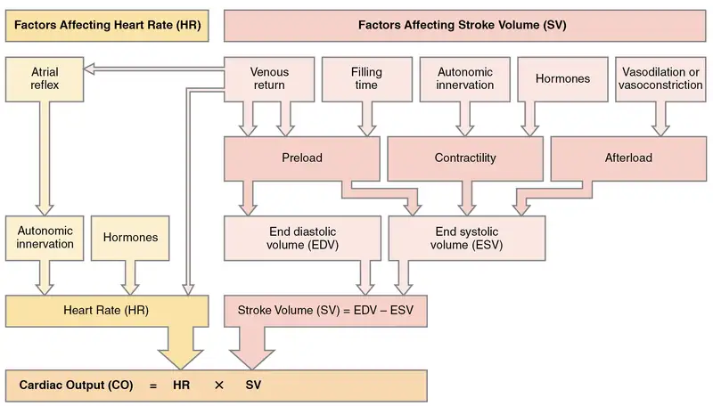
Table 19.3
| Cardiac Response to Decreasing Blood Flow and Pressure Due to Decreasing Cardiac Output | ||
|---|---|---|
| Baroreceptors (aorta, carotid arteries, venae cavae, and atria) | Chemoreceptors (both central nervous system and in proximity to baroreceptors) | |
| Sensitive to | Decreasing stretch | Decreasing O2 and increasing CO2, H+, and lactic acid |
| Target | Parasympathetic stimulation suppressed | Sympathetic stimulation increased |
| Response of heart | Increasing heart rate and increasing stroke volume | Increasing heart rate and increasing stroke volume |
| Overall effect | Increasing blood flow and pressure due to increasing cardiac output; homeostasis restored | Increasing blood flow and pressure due to increasing cardiac output; homeostasis restored |
Table 19.4
| Cardiac Response to Increasing Blood Flow and Pressure Due to Increasing Cardiac Output | ||
|---|---|---|
| Baroreceptors (aorta, carotid arteries, venae cavae, and atria) | Chemoreceptors (both central nervous system and in proximity to baroreceptors) | |
| Sensitive to | Increasing stretch | Increasing O2 and decreasing CO2, H+, and lactic acid |
| Target | Parasympathetic stimulation increased | Sympathetic stimulation suppressed |
| Response of heart | Decreasing heart rate and decreasing stroke volume | Decreasing heart rate and decreasing stroke volume |
| Overall effect | Decreasing blood flow and pressure due to decreasing cardiac output; homeostasis restored | Decreasing blood flow and pressure due to decreasing cardiac output; homeostasis restored |
19.5 Development of the Heart¶
Learning Objectives
By the end of this section, you will be able to:
- Describe the embryological development of heart structures
- Identify five regions of the fetal heart
- Relate fetal heart structures to adult counterparts
The human heart is the first functional organ to develop. It begins beating and pumping blood around day 21 or 22, a mere three weeks after fertilization. This emphasizes the critical nature of the heart in distributing blood through the vessels and the vital exchange of nutrients, oxygen, and wastes both to and from the developing baby. The critical early development of the heart is reflected by the prominent heart bulge that appears on the anterior surface of the embryo.
The heart forms from an embryonic tissue called mesoderm around 18 to 19 days after fertilization. Mesoderm is one of the three primary germ layers that differentiates early in development that collectively gives rise to all subsequent tissues and organs. The heart begins to develop near the head of the embryo in a region known as the cardiogenic area. Following chemical signals called factors from the underlying endoderm (another of the three primary germ layers), the cardiogenic area begins to form two strands called the cardiogenic cords (Figure 19.36). As the cardiogenic cords develop, a lumen rapidly develops within them. At this point, they are referred to as endocardial tubes. The two tubes migrate together and fuse to form a single primitive heart tube. The primitive heart tube quickly forms five distinct regions. From head to tail, these include the truncus arteriosus, bulbus cordis, primitive ventricle, primitive atrium, and the sinus venosus. Initially, all venous blood flows into the sinus venosus, and contractions propel the blood from tail to head, or from the sinus venosus to the truncus arteriosus. This is a very different pattern from that of an adult.
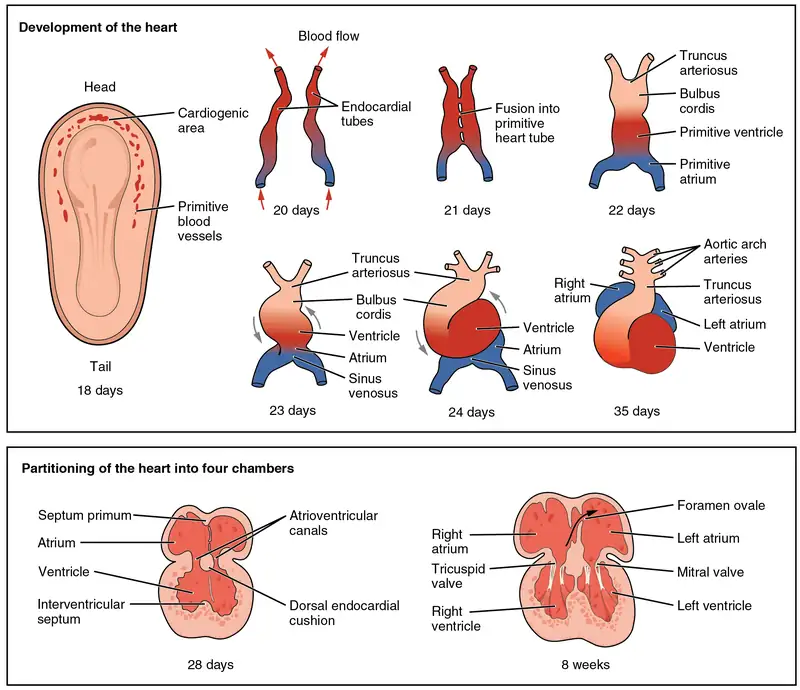
The five regions of the primitive heart tube develop into recognizable structures in a fully developed heart. The truncus arteriosus will eventually divide and give rise to the ascending aorta and pulmonary trunk. The bulbus cordis develops into the right ventricle. The primitive ventricle forms the left ventricle. The primitive atrium becomes the anterior portions of both the right and left atria, and the two auricles. The sinus venosus develops into the posterior portion of the right atrium, the SA node, and the coronary sinus.
As the primitive heart tube elongates, it begins to fold within the pericardium, eventually forming an S shape, which places the chambers and major vessels into an alignment similar to the adult heart. This process occurs between days 23 and 28. The remainder of the heart development pattern includes development of septa and valves, and remodeling of the actual chambers. Partitioning of the atria and ventricles by the interatrial septum, interventricular septum, and atrioventricular septum is complete by the end of the fifth week, although the fetal blood shunts remain until birth or shortly after. The atrioventricular valves form between weeks five and eight, and the semilunar valves form between weeks five and nine.
Chapter Review¶
Key Terms¶
- afterload
- force the ventricles must develop to effectively pump blood against the resistance in the vessels
- anastomosis
- (plural = anastomoses) area where vessels unite to allow blood to circulate even if there may be partial blockage in another branch
- anterior cardiac veins
- vessels that parallel the small cardiac arteries and drain the anterior surface of the right ventricle; bypass the coronary sinus and drain directly into the right atrium
- anterior interventricular artery
- (also, left anterior descending artery or LAD) major branch of the left coronary artery that follows the anterior interventricular sulcus
- anterior interventricular sulcus
- sulcus located between the left and right ventricles on the anterior surface of the heart
- aortic valve
- (also, aortic semilunar valve) valve located at the base of the aorta
- artificial pacemaker
- medical device that transmits electrical signals to the heart to ensure that it contracts and pumps blood to the body
- atrial reflex
- (also, called Bainbridge reflex) autonomic reflex that responds to stretch receptors in the atria that send impulses to the cardioaccelerator area to increase HR when venous flow into the atria increases
- atrioventricular (AV) node
- clump of myocardial cells located in the inferior portion of the right atrium within the atrioventricular septum; receives the impulse from the SA node, pauses, and then transmits it into specialized conducting cells within the interventricular septum
- atrioventricular bundle
- (also, bundle of His) group of specialized myocardial conductile cells that transmit the impulse from the AV node through the interventricular septum; form the left and right atrioventricular bundle branches
- atrioventricular bundle branches
- (also, left or right bundle branches) specialized myocardial conductile cells that arise from the bifurcation of the atrioventricular bundle and pass through the interventricular septum; lead to the Purkinje fibers and also to the right papillary muscle via the moderator band
- atrioventricular septum
- cardiac septum located between the atria and ventricles; atrioventricular valves are located here
- atrioventricular valves
- one-way valves located between the atria and ventricles; the valve on the right is called the tricuspid valve, and the one on the left is the mitral or bicuspid valve
- atrium
- (plural = atria) upper or receiving chamber of the heart that pumps blood into the lower chambers just prior to their contraction; the right atrium receives blood from the systemic circuit that flows into the right ventricle; the left atrium receives blood from the pulmonary circuit that flows into the left ventricle
- auricle
- extension of an atrium visible on the superior surface of the heart
- autonomic tone
- contractile state during resting cardiac activity produced by mild sympathetic and parasympathetic stimulation
- autorhythmicity
- ability of cardiac muscle to initiate its own electrical impulse that triggers the mechanical contraction that pumps blood at a fixed pace without nervous or endocrine control
- Bachmann’s bundle
- (also, interatrial band) group of specialized conducting cells that transmit the impulse directly from the SA node in the right atrium to the left atrium
- Bainbridge reflex
- (also, called atrial reflex) autonomic reflex that responds to stretch receptors in the atria that send impulses to the cardioaccelerator area to increase HR when venous flow into the atria increases
- baroreceptor reflex
- autonomic reflex in which the cardiac centers monitor signals from the baroreceptor stretch receptors and regulate heart function based on blood flow
- bicuspid valve
- (also, mitral valve or left atrioventricular valve) valve located between the left atrium and ventricle; consists of two flaps of tissue
- bulbus cordis
- portion of the primitive heart tube that will eventually develop into the right ventricle
- bundle of His
- (also, atrioventricular bundle) group of specialized myocardial conductile cells that transmit the impulse from the AV node through the interventricular septum; form the left and right atrioventricular bundle branches
- cardiac cycle
- period of time between the onset of atrial contraction (atrial systole) and ventricular relaxation (ventricular diastole)
- cardiac notch
- depression in the medial surface of the superior lobe of the left lung where the apex of the heart is located
- cardiac output (CO)
- amount of blood pumped by each ventricle during one minute; equals HR multiplied by SV
- cardiac plexus
- paired complex network of nerve fibers near the base of the heart that receive sympathetic and parasympathetic stimulations to regulate HR
- cardiac reflexes
- series of autonomic reflexes that enable the cardiovascular centers to regulate heart function based upon sensory information from a variety of visceral sensors
- cardiac reserve
- difference between maximum and resting CO
- cardiac skeleton
- (also, skeleton of the heart) reinforced connective tissue located within the atrioventricular septum; includes four rings that surround the openings between the atria and ventricles, and the openings to the pulmonary trunk and aorta; the point of attachment for the heart valves
- cardiogenic area
- area near the head of the embryo where the heart begins to develop 18–19 days after fertilization
- cardiogenic cords
- two strands of tissue that form within the cardiogenic area
- cardiomyocyte
- muscle cell of the heart
- chordae tendineae
- string-like extensions of tough connective tissue that extend from the flaps of the atrioventricular valves to the papillary muscles
- circumflex artery
- branch of the left coronary artery that follows coronary sulcus
- coronary arteries
- branches of the ascending aorta that supply blood to the heart; the left coronary artery feeds the left side of the heart, the left atrium and ventricle, and the interventricular septum; the right coronary artery feeds the right atrium, portions of both ventricles, and the heart conduction system
- coronary sinus
- large, thin-walled vein on the posterior surface of the heart that lies within the atrioventricular sulcus and drains the heart myocardium directly into the right atrium
- coronary sulcus
- sulcus that marks the boundary between the atria and ventricles
- coronary veins
- vessels that drain the heart and generally parallel the large surface arteries
- diastole
- period of time when the heart muscle is relaxed and the chambers fill with blood
- ejection fraction
- portion of the blood that is pumped or ejected from the heart with each contraction; mathematically represented by SV divided by EDV
- electrocardiogram (ECG)
- surface recording of the electrical activity of the heart that can be used for diagnosis of irregular heart function; also abbreviated as EKG
- end diastolic volume (EDV)
- (also, preload) the amount of blood in the ventricles at the end of atrial systole just prior to ventricular contraction
- end systolic volume (ESV)
- amount of blood remaining in each ventricle following systole
- endocardial tubes
- stage in which lumens form within the expanding cardiogenic cords, forming hollow structures
- endocardium
- innermost layer of the heart lining the heart chambers and heart valves; composed of endothelium reinforced with a thin layer of connective tissue that binds to the myocardium
- endothelium
- layer of smooth, simple squamous epithelium that lines the endocardium and blood vessels
- epicardial coronary arteries
- surface arteries of the heart that generally follow the sulci
- epicardium
- innermost layer of the serous pericardium and the outermost layer of the heart wall
- filling time
- duration of ventricular diastole during which filling occurs
- foramen ovale
- opening in the fetal heart that allows blood to flow directly from the right atrium to the left atrium, bypassing the fetal pulmonary circuit
- fossa ovalis
- oval-shaped depression in the interatrial septum that marks the former location of the foramen ovale
- Frank-Starling mechanism
- relationship between ventricular stretch and contraction in which the force of heart contraction is directly proportional to the initial length of the muscle fiber
- great cardiac vein
- vessel that follows the interventricular sulcus on the anterior surface of the heart and flows along the coronary sulcus into the coronary sinus on the posterior surface; parallels the anterior interventricular artery and drains the areas supplied by this vessel
- heart block
- interruption in the normal conduction pathway
- heart bulge
- prominent feature on the anterior surface of the heart, reflecting early cardiac development
- heart rate (HR)
- number of times the heart contracts (beats) per minute
- heart sounds
- sounds heard via auscultation with a stethoscope of the closing of the atrioventricular valves (“lub”) and semilunar valves (“dub”)
- hypertrophic cardiomyopathy
- pathological enlargement of the heart, generally for no known reason
- inferior vena cava
- large systemic vein that returns blood to the heart from the inferior portion of the body
- interatrial band
- (also, Bachmann’s bundle) group of specialized conducting cells that transmit the impulse directly from the SA node in the right atrium to the left atrium
- interatrial septum
- cardiac septum located between the two atria; contains the fossa ovalis after birth
- intercalated disc
- physical junction between adjacent cardiac muscle cells; consisting of desmosomes, specialized linking proteoglycans, and gap junctions that allow passage of ions between the two cells
- internodal pathways
- specialized conductile cells within the atria that transmit the impulse from the SA node throughout the myocardial cells of the atrium and to the AV node
- interventricular septum
- cardiac septum located between the two ventricles
- isovolumic contraction
- (also, isovolumetric contraction) initial phase of ventricular contraction in which tension and pressure in the ventricle increase, but no blood is pumped or ejected from the heart
- isovolumic ventricular relaxation phase
- initial phase of the ventricular diastole when pressure in the ventricles drops below pressure in the two major arteries, the pulmonary trunk, and the aorta, and blood attempts to flow back into the ventricles, producing the dicrotic notch of the ECG and closing the two semilunar valves
- left atrioventricular valve
- (also, mitral valve or bicuspid valve) valve located between the left atrium and ventricle; consists of two flaps of tissue
- marginal arteries
- branches of the right coronary artery that supply blood to the superficial portions of the right ventricle
- mesoderm
- one of the three primary germ layers that differentiate early in embryonic development
- mesothelium
- simple squamous epithelial portion of serous membranes, such as the superficial portion of the epicardium (the visceral pericardium) and the deepest portion of the pericardium (the parietal pericardium)
- middle cardiac vein
- vessel that parallels and drains the areas supplied by the posterior interventricular artery; drains into the great cardiac vein
- mitral valve
- (also, left atrioventricular valve or bicuspid valve) valve located between the left atrium and ventricle; consists of two flaps of tissue
- moderator band
- band of myocardium covered by endocardium that arises from the inferior portion of the interventricular septum in the right ventricle and crosses to the anterior papillary muscle; contains conductile fibers that carry electrical signals followed by contraction of the heart
- murmur
- unusual heart sound detected by auscultation; typically related to septal or valve defects
- myocardial conducting cells
- specialized cells that transmit electrical impulses throughout the heart and trigger contraction by the myocardial contractile cells
- myocardial contractile cells
- bulk of the cardiac muscle cells in the atria and ventricles that conduct impulses and contract to propel blood
- myocardium
- thickest layer of the heart composed of cardiac muscle cells built upon a framework of primarily collagenous fibers and blood vessels that supply it and the nervous fibers that help to regulate it
- negative inotropic factors
- factors that negatively impact or lower heart contractility
- P wave
- component of the electrocardiogram that represents the depolarization of the atria
- pacemaker
- cluster of specialized myocardial cells known as the SA node that initiates the sinus rhythm
- papillary muscle
- extension of the myocardium in the ventricles to which the chordae tendineae attach
- pectinate muscles
- muscular ridges seen on the anterior surface of the right atrium
- pericardial cavity
- cavity surrounding the heart filled with a lubricating serous fluid that reduces friction as the heart contracts
- pericardial sac
- (also, pericardium) membrane that separates the heart from other mediastinal structures; consists of two distinct, fused sublayers: the fibrous pericardium and the parietal pericardium
- pericardium
- (also, pericardial sac) membrane that separates the heart from other mediastinal structures; consists of two distinct, fused sublayers: the fibrous pericardium and the parietal pericardium
- positive inotropic factors
- factors that positively impact or increase heart contractility
- posterior cardiac vein
- vessel that parallels and drains the areas supplied by the marginal artery branch of the circumflex artery; drains into the great cardiac vein
- posterior interventricular artery
- (also, posterior descending artery) branch of the right coronary artery that runs along the posterior portion of the interventricular sulcus toward the apex of the heart and gives rise to branches that supply the interventricular septum and portions of both ventricles
- posterior interventricular sulcus
- sulcus located between the left and right ventricles on the posterior surface of the heart
- preload
- (also, end diastolic volume) amount of blood in the ventricles at the end of atrial systole just prior to ventricular contraction
- prepotential depolarization
- (also, spontaneous depolarization) mechanism that accounts for the autorhythmic property of cardiac muscle; the membrane potential increases as sodium ions diffuse through the always-open sodium ion channels and causes the electrical potential to rise
- primitive atrium
- portion of the primitive heart tube that eventually becomes the anterior portions of both the right and left atria, and the two auricles
- primitive heart tube
- singular tubular structure that forms from the fusion of the two endocardial tubes
- primitive ventricle
- portion of the primitive heart tube that eventually forms the left ventricle
- pulmonary arteries
- left and right branches of the pulmonary trunk that carry deoxygenated blood from the heart to each of the lungs
- pulmonary capillaries
- capillaries surrounding the alveoli of the lungs where gas exchange occurs: carbon dioxide exits the blood and oxygen enters
- pulmonary circuit
- blood flow to and from the lungs
- pulmonary trunk
- large arterial vessel that carries blood ejected from the right ventricle; divides into the left and right pulmonary arteries
- pulmonary valve
- (also, pulmonary semilunar valve, the pulmonic valve, or the right semilunar valve) valve at the base of the pulmonary trunk that prevents backflow of blood into the right ventricle; consists of three flaps
- pulmonary veins
- veins that carry highly oxygenated blood into the left atrium, which pumps the blood into the left ventricle, which in turn pumps oxygenated blood into the aorta and to the many branches of the systemic circuit
- Purkinje fibers
- specialized myocardial conduction fibers that arise from the bundle branches and spread the impulse to the myocardial contraction fibers of the ventricles
- QRS complex
- component of the electrocardiogram that represents the depolarization of the ventricles and includes, as a component, the repolarization of the atria
- right atrioventricular valve
- (also, tricuspid valve) valve located between the right atrium and ventricle; consists of three flaps of tissue
- semilunar valves
- valves located at the base of the pulmonary trunk and at the base of the aorta
- septum
- (plural = septa) walls or partitions that divide the heart into chambers
- septum primum
- flap of tissue in the fetus that covers the foramen ovale within a few seconds after birth
- sinoatrial (SA) node
- known as the pacemaker, a specialized clump of myocardial conducting cells located in the superior portion of the right atrium that has the highest inherent rate of depolarization that then spreads throughout the heart
- sinus rhythm
- normal contractile pattern of the heart
- sinus venosus
- develops into the posterior portion of the right atrium, the SA node, and the coronary sinus
- small cardiac vein
- parallels the right coronary artery and drains blood from the posterior surfaces of the right atrium and ventricle; drains into the coronary sinus, middle cardiac vein, or right atrium
- spontaneous depolarization
- (also, prepotential depolarization) the mechanism that accounts for the autorhythmic property of cardiac muscle; the membrane potential increases as sodium ions diffuse through the always-open sodium ion channels and causes the electrical potential to rise
- stroke volume (SV)
- amount of blood pumped by each ventricle per contraction; also, the difference between EDV and ESV
- sulcus
- (plural = sulci) fat-filled groove visible on the surface of the heart; coronary vessels are also located in these areas
- superior vena cava
- large systemic vein that returns blood to the heart from the superior portion of the body
- systemic circuit
- blood flow to and from virtually all of the tissues of the body
- systole
- period of time when the heart muscle is contracting
- T wave
- component of the electrocardiogram that represents the repolarization of the ventricles
- target heart rate
- range in which both the heart and lungs receive the maximum benefit from an aerobic workout
- trabeculae carneae
- ridges of muscle covered by endocardium located in the ventricles
- tricuspid valve
- term used most often in clinical settings for the right atrioventricular valve
- truncus arteriosus
- portion of the primitive heart that will eventually divide and give rise to the ascending aorta and pulmonary trunk
- valve
- in the cardiovascular system, a specialized structure located within the heart or vessels that ensures one-way flow of blood
- ventricle
- one of the primary pumping chambers of the heart located in the lower portion of the heart; the left ventricle is the major pumping chamber on the lower left side of the heart that ejects blood into the systemic circuit via the aorta and receives blood from the left atrium; the right ventricle is the major pumping chamber on the lower right side of the heart that ejects blood into the pulmonary circuit via the pulmonary trunk and receives blood from the right atrium
- ventricular ejection phase
- second phase of ventricular systole during which blood is pumped from the ventricle
Chapter Review¶
19.1 Heart Anatomy¶
The heart resides within the pericardial sac and is located in the mediastinal space within the thoracic cavity. The pericardial sac consists of two fused layers: an outer fibrous capsule and an inner parietal pericardium lined with a serous membrane. Between the pericardial sac and the heart is the pericardial cavity, which is filled with lubricating serous fluid. The walls of the heart are composed of an outer epicardium, a thick myocardium, and an inner lining layer of endocardium. The human heart consists of a pair of atria, which receive blood and pump it into a pair of ventricles, which pump blood into the vessels. The right atrium receives systemic blood relatively low in oxygen and pumps it into the right ventricle, which pumps it into the pulmonary circuit. Exchange of oxygen and carbon dioxide occurs in the lungs, and blood high in oxygen returns to the left atrium, which pumps blood into the left ventricle, which in turn pumps blood into the aorta and the remainder of the systemic circuit. The septa are the partitions that separate the chambers of the heart. They include the interatrial septum, the interventricular septum, and the atrioventricular septum. Two of these openings are guarded by the atrioventricular valves, the right tricuspid valve and the left mitral valve, which prevent the backflow of blood. Each is attached to chordae tendineae that extend to the papillary muscles, which are extensions of the myocardium, to prevent the valves from being blown back into the atria. The pulmonary valve is located at the base of the pulmonary trunk, and the left semilunar valve is located at the base of the aorta. The right and left coronary arteries are the first to branch off the aorta and arise from two of the three sinuses located near the base of the aorta and are generally located in the sulci. Cardiac veins parallel the small cardiac arteries and generally drain into the coronary sinus.
19.2 Cardiac Muscle and Electrical Activity¶
The heart is regulated by both neural and endocrine control, yet it is capable of initiating its own action potential followed by muscular contraction. The conductive cells within the heart establish the heart rate and transmit it through the myocardium. The contractile cells contract and propel the blood. The normal path of transmission for the conductive cells is the sinoatrial (SA) node, internodal pathways, atrioventricular (AV) node, atrioventricular (AV) bundle of His, bundle branches, and Purkinje fibers. The action potential for the conductive cells consists of a prepotential phase with a slow influx of Na+followed by a rapid influx of Ca2+and outflux of K+. Contractile cells have an action potential with an extended plateau phase that results in an extended refractory period to allow complete contraction for the heart to pump blood effectively. Recognizable points on the ECG include the P wave that corresponds to atrial depolarization, the QRS complex that corresponds to ventricular depolarization, and the T wave that corresponds to ventricular repolarization.
19.3 Cardiac Cycle¶
The cardiac cycle comprises a complete relaxation and contraction of both the atria and ventricles, and lasts approximately 0.8 seconds. Beginning with all chambers in diastole, blood flows passively from the veins into the atria and past the atrioventricular valves into the ventricles. The atria begin to contract (atrial systole), following depolarization of the atria, and pump blood into the ventricles. The ventricles begin to contract (ventricular systole), raising pressure within the ventricles. When ventricular pressure rises above the pressure in the atria, blood flows toward the atria, producing the first heart sound, S1 or lub. As pressure in the ventricles rises above two major arteries, blood pushes open the two semilunar valves and moves into the pulmonary trunk and aorta in the ventricular ejection phase. Following ventricular repolarization, the ventricles begin to relax (ventricular diastole), and pressure within the ventricles drops. As ventricular pressure drops, there is a tendency for blood to flow back into the atria from the major arteries, producing the dicrotic notch in the ECG and closing the two semilunar valves. The second heart sound, S2 or dub, occurs when the semilunar valves close. When the pressure falls below that of the atria, blood moves from the atria into the ventricles, opening the atrioventricular valves and marking one complete heart cycle. The valves prevent backflow of blood. Failure of the valves to operate properly produces turbulent blood flow within the heart; the resulting heart murmur can often be heard with a stethoscope.
19.4 Cardiac Physiology¶
Many factors affect HR and SV, and together, they contribute to cardiac function. HR is largely determined and regulated by autonomic stimulation and hormones. There are several feedback loops that contribute to maintaining homeostasis dependent upon activity levels, such as the atrial reflex, which is determined by venous return.
SV is regulated by autonomic innervation and hormones, but also by filling time and venous return. Venous return is determined by activity of the skeletal muscles, blood volume, and changes in peripheral circulation. Venous return determines preload and the atrial reflex. Filling time directly related to HR also determines preload. Preload then impacts both EDV and ESV. Autonomic innervation and hormones largely regulate contractility. Contractility impacts EDV as does afterload. CO is the product of HR multiplied by SV. SV is the difference between EDV and ESV.
19.5 Development of the Heart¶
The heart is the first organ to form and become functional, emphasizing the importance of transport of material to and from the developing infant. It originates about day 18 or 19 from the mesoderm and begins beating and pumping blood about day 21 or 22. It forms from the cardiogenic region near the head and is visible as a prominent heart bulge on the surface of the embryo. Originally, it consists of a pair of strands called cardiogenic cords that quickly form a hollow lumen and are referred to as endocardial tubes. These then fuse into a single heart tube and differentiate into the truncus arteriosus, bulbus cordis, primitive ventricle, primitive atrium, and sinus venosus, starting about day 22. The primitive heart begins to form an S shape within the pericardium between days 23 and 28. The internal septa begin to form about day 28, separating the heart into the atria and ventricles, although the foramen ovale persists until shortly after birth. Between weeks five and eight, the atrioventricular valves form. The semilunar valves form between weeks five and nine.
Interactive Link Questions¶
1. Visit this site to observe an echocardiogram of actual heart valves opening and closing. Although much of the heart has been “removed” from this gif loop so the chordae tendineae are not visible, why is their presence more critical for the atrioventricular valves (tricuspid and mitral) than the semilunar (aortic and pulmonary) valves?
Answer
The pressure gradient between the atria and the ventricles is much greater than that between the ventricles and the pulmonary trunk and aorta. Without the presence of the chordae tendineae and papillary muscles, the valves would be blown back (prolapsed) into the atria and blood would regurgitate.
Review Questions¶
19.1 Heart Anatomy¶
2. Which of the following is not important in preventing backflow of blood?
- chordae tendineae
- papillary muscles
- AV valves
- endocardium
Answer
D
3. Which valve separates the left atrium from the left ventricle?
- mitral
- tricuspid
- pulmonary
- aortic
Answer
A
4. Which of the following lists the valves in the order through which the blood flows from the vena cava through the heart?
- tricuspid, pulmonary semilunar, bicuspid, aortic semilunar
- mitral, pulmonary semilunar, bicuspid, aortic semilunar
- aortic semilunar, pulmonary semilunar, tricuspid, bicuspid
- bicuspid, aortic semilunar, tricuspid, pulmonary semilunar
Answer
A
5. Which chamber initially receives blood from the systemic circuit?
- left atrium
- left ventricle
- right atrium
- right ventricle
Answer
C
6. The ________ layer secretes chemicals that help to regulate ionic environments and strength of contraction and serve as powerful vasoconstrictors.
- pericardial sac
- endocardium
- myocardium
- epicardium
Answer
B
7. The myocardium would be the thickest in the ________.
- left atrium
- left ventricle
- right atrium
- right ventricle
Answer
B
8. In which septum is it normal to find openings in the adult?
- interatrial septum
- interventricular septum
- atrioventricular septum
- all of the above
Answer
C
19.2 Cardiac Muscle and Electrical Activity¶
9. Which of the following is unique to cardiac muscle cells?
- Only cardiac muscle contains a sarcoplasmic reticulum.
- Only cardiac muscle has gap junctions.
- Only cardiac muscle is capable of autorhythmicity
- Only cardiac muscle has a high concentration of mitochondria.
Answer
B
10. The influx of which ion accounts for the plateau phase?
- sodium
- potassium
- chloride
- calcium
Answer
D
11. Which portion of the ECG corresponds to repolarization of the atria?
- P wave
- QRS complex
- T wave
- none of the above: atrial repolarization is masked by ventricular depolarization
Answer
D
12. Which component of the heart conduction system would have the slowest rate of firing?
- atrioventricular node
- atrioventricular bundle
- bundle branches
- Purkinje fibers
Answer
D
19.3 Cardiac Cycle¶
13. The cardiac cycle consists of a distinct relaxation and contraction phase. Which term is typically used to refer ventricular contraction while no blood is being ejected?
- systole
- diastole
- quiescent
- isovolumic contraction
Answer
D
14. Most blood enters the ventricle during ________.
- atrial systole
- atrial diastole
- ventricular systole
- isovolumic contraction
Answer
B
15. The first heart sound represents which portion of the cardiac cycle?
- atrial systole
- ventricular systole
- closing of the atrioventricular valves
- closing of the semilunar valves
Answer
C
16. Ventricular relaxation immediately follows ________.
- atrial depolarization
- ventricular repolarization
- ventricular depolarization
- atrial repolarization
Answer
B
19.4 Cardiac Physiology¶
17. The force the heart must overcome to pump blood is known as ________.
- preload
- afterload
- cardiac output
- stroke volume
Answer
B
18. The cardiovascular centers are located in which area of the brain?
- medulla oblongata
- pons
- mesencephalon (midbrain)
- cerebrum
Answer
A
19. In a healthy young adult, what happens to cardiac output when heart rate increases above 160 bpm?
- It increases.
- It decreases.
- It remains constant.
- There is no way to predict.
Answer
B
20. What happens to preload when there is venous constriction in the veins?
- It increases.
- It decreases.
- It remains constant.
- There is no way to predict.
Answer
A
21. Which of the following is a positive inotrope?
- Na+
- K+
- Ca2+
- both Na+and K+
Answer
C
19.5 Development of the Heart¶
22. The earliest organ to form and begin function within the developing human is the ________.
- brain
- stomach
- lungs
- heart
Answer
D
23. Of the three germ layers that give rise to all adult tissues and organs, which gives rise to the heart?
- ectoderm
- endoderm
- mesoderm
- placenta
Answer
C
24. The two tubes that eventually fuse to form the heart are referred to as the ________.
- primitive heart tubes
- endocardial tubes
- cardiogenic region
- cardiogenic tubes
Answer
D
25. Which primitive area of the heart will give rise to the right ventricle?
- bulbus cordis
- primitive ventricle
- sinus venosus
- truncus arteriosus
Answer
A
26. The pulmonary trunk and aorta are derived from which primitive heart structure?
- bulbus cordis
- primitive ventricle
- sinus venosus
- truncus arteriosus
Answer
D
Critical Thinking Questions¶
19.1 Heart Anatomy¶
27. Describe how the valves keep the blood moving in one direction.
Answer
When the ventricles contract and pressure begins to rise in the ventricles, there is an initial tendency for blood to flow back (regurgitate) to the atria. However, the papillary muscles also contract, placing tension on the chordae tendineae and holding the atrioventricular valves (tricuspid and mitral) in place to prevent the valves from prolapsing and being forced back into the atria. The semilunar valves (pulmonary and aortic) lack chordae tendineae and papillary muscles, but do not face the same pressure gradients as do the atrioventricular valves. As the ventricles relax and pressure drops within the ventricles, there is a tendency for the blood to flow backward. However, the valves, consisting of reinforced endothelium and connective tissue, fill with blood and seal off the opening preventing the return of blood.
28. Why is the pressure in the pulmonary circulation lower than in the systemic circulation?
Answer
The pulmonary circuit consists of blood flowing to and from the lungs, whereas the systemic circuit carries blood to and from the entire body. The systemic circuit is far more extensive, consisting of far more vessels and offers much greater resistance to the flow of blood, so the heart must generate a higher pressure to overcome this resistance. This can be seen in the thickness of the myocardium in the ventricles.
19.2 Cardiac Muscle and Electrical Activity¶
29. Why is the plateau phase so critical to cardiac muscle function?
Answer
It prevents additional impulses from spreading through the heart prematurely, thereby allowing the muscle sufficient time to contract and pump blood effectively.
30. How does the delay of the impulse at the atrioventricular node contribute to cardiac function?
Answer
It ensures sufficient time for the atrial muscle to contract and pump blood into the ventricles prior to the impulse being conducted into the lower chambers.
31. How do gap junctions and intercalated disks aid contraction of the heart?
Answer
Gap junctions within the intercalated disks allow impulses to spread from one cardiac muscle cell to another, allowing sodium, potassium, and calcium ions to flow between adjacent cells, propagating the action potential, and ensuring coordinated contractions.
32. Why do the cardiac muscles cells demonstrate autorhythmicity?
Answer
Without a true resting potential, there is a slow influx of sodium ions through slow channels that produces a prepotential that gradually reaches threshold.
19.3 Cardiac Cycle¶
33. Describe one cardiac cycle, beginning with both atria and ventricles relaxed.
Answer
The cardiac cycle comprises a complete relaxation and contraction of both the atria and ventricles, and lasts approximately 0.8 seconds. Beginning with all chambers in diastole, blood flows passively from the veins into the atria and past the atrioventricular valves into the ventricles. The atria begin to contract following depolarization of the atria and pump blood into the ventricles. The ventricles begin to contract, raising pressure within the ventricles. When ventricular pressure rises above the pressure in the two major arteries, blood pushes open the two semilunar valves and moves into the pulmonary trunk and aorta in the ventricular ejection phase. Following ventricular repolarization, the ventricles begin to relax, and pressure within the ventricles drops. When the pressure falls below that of the atria, blood moves from the atria into the ventricles, opening the atrioventricular valves and marking one complete heart cycle.
19.4 Cardiac Physiology¶
34. Why does increasing EDV increase contractility?
Answer
Increasing EDV increases the sarcomeres’ lengths within the cardiac muscle cells, allowing more cross bridge formation between the myosin and actin and providing for a more powerful contraction. This relationship is described in the Frank-Starling mechanism.
35. Why is afterload important to cardiac function?
Answer
Afterload represents the resistance within the arteries to the flow of blood ejected from the ventricles. If uncompensated, if afterload increases, flow will decrease. In order for the heart to maintain adequate flow to overcome increasing afterload, it must pump more forcefully. This is one of the negative consequences of high blood pressure or hypertension.
19.5 Development of the Heart¶
36. Why is it so important for the human heart to develop early and begin functioning within the developing embryo?
Answer
The human embryo is rapidly growing and has great demands for nutrients and oxygen, while producing waste products including carbon dioxide. All of these materials must be received from or delivered to the mother for processing. Without an efficient early circulatory system, this would be impossible.
37. Describe how the major pumping chambers, the ventricles, form within the developing heart.
Answer
After fusion of the two endocardial tubes into the single primitive heart, five regions quickly become visible. From the head, these are the truncus arteriosus, bulbus cordis, primitive ventricle, primitive atrium, and sinus venosus. Contractions propel the blood from the sinus venosus to the truncus arteriosus. About day 23, the heart begins to form an S-shaped structure within the pericardium. The bulbus cordis develops into the right ventricle, whereas the primitive ventricle becomes the left ventricle. The interventricular septum separating these begins to form about day 28. The atrioventricular valves form between weeks five to eight. At this point, the heart ventricles resemble the adult structure.
References¶
References
Spreeuw, J., & Owadally, I. (2013). Investigating the Broken-Heart Effect: A Model for Short-Term Dependence between the Remaining Lifetimes of Joint Lives. Annals of Actuarial Science. Available from: https://www.cambridge.org/core/journals/annals-of-actuarial-science/article/abs/investigating-the-brokenheart-effect-a-model-for-shortterm-dependence-between-the-remaining-lifetimes-of-joint-lives/CE4BCF96E671F09B44259F0ED7E8216A
Adapted from Anatomy and Physiology 2e by OpenStax, licensed under CC BY 4.0. Access the original for free at openstax.org. Changes: converted to the web reading format of The Open Book Project.